<!doctype html>
<html lang="en">
<head>
  <meta charset="utf-8">
  <meta name="viewport" content="width=device-width, initial-scale=1">
  <title>arxiv digest — 2026-10-02</title>
  <style>
:root {
  --bg: #ffffff;
  --fg: #1f2328;
  --muted: #59636e;
  --border: #d0d7de;
  --card: #f6f8fa;
  --link: #0969da;
}
body {
  max-width: 980px;
  margin: 0 auto;
  padding: 2rem 1rem 5rem;
  font-family: -apple-system, BlinkMacSystemFont, "Segoe UI", Helvetica, Arial, sans-serif;
  line-height: 1.55;
  color: var(--fg);
  background: var(--bg);
}
a { color: var(--link); }
img { max-width: 100%; height: auto; }
pre, code { background: var(--card); border-radius: 6px; }
pre { padding: 1rem; overflow-x: auto; }
blockquote { border-left: 4px solid var(--border); padding-left: 1rem; color: var(--muted); }
details { margin: 0.6rem 0; }
summary { cursor: pointer; font-weight: 600; }
.paper-figures-scroll {
  display: flex;
  gap: 1rem;
  overflow-x: auto;
  overscroll-behavior-x: contain;
  padding: 0.75rem 0.25rem 1rem;
  margin: 1rem 0 1.25rem;
  border-top: 1px solid var(--border);
  border-bottom: 1px solid var(--border);
  scroll-snap-type: x proximity;
}
.paper-figure-card {
  flex: 0 0 min(260px, 72vw);
  scroll-snap-align: start;
  background: var(--card);
  border: 1px solid var(--border);
  border-radius: 12px;
  padding: 0.55rem;
}
.paper-figure-card img {
  display: block;
  width: 100%;
  max-height: 240px;
  object-fit: contain;
  background: white;
  border-radius: 8px;
}
.paper-figure-caption {
  display: block;
  margin-top: 0.5rem;
  color: var(--muted);
  font-size: 0.85rem;
}
.figure-strip-hint {
  color: var(--muted);
  font-size: 0.9rem;
  margin-bottom: -0.3rem;
}
</style>
  <!-- MathJax: renders $...$ inline math and $$...$$ display math, plus
       \(...\) and \[...\]. Loaded from the official CDN; works offline
       once cached. Configured to skip code/pre blocks so arxiv IDs that
       look like dollar amounts don't get mangled. -->
  <script>
    window.MathJax = {
      tex: {
        inlineMath: [['$', '$'], ['\\(', '\\)']],
        displayMath: [['$$', '$$'], ['\\[', '\\]']],
        processEscapes: true,
        processEnvironments: true
      },
      options: {
        skipHtmlTags: ['script', 'noscript', 'style', 'textarea', 'pre', 'code'],
        ignoreHtmlClass: 'tex2jax_ignore',
        processHtmlClass: 'tex2jax_process'
      }
    };
  </script>
  <script id="MathJax-script" async
    src="https://cdn.jsdelivr.net/npm/mathjax@3/es5/tex-chtml.js"></script>
</head>
<body>
<header style="background-color: #333; color: white; padding: 15px; margin-bottom: 20px;">
  <h1 style="margin: 0; font-size: 24px;">
    <a href="https://ochelpan.github.io/arXiv_clean/" style="color: white; text-decoration: none;">Main</a>
  </h1>
</header>

<h1>Daily arXiv Report</h1>

<hr>
<p>
<a href="index.html">← Index</a>
 · <a href="papers_02.html">Next →</a>
</p>
<hr>

<h2>Papers 1–20</h2>
<p><a id="paper-2609.38333"></a></p>
<h3 id="collective-dynamics-in-spin-chains-with-constrained-dissipation-classically-fragile-but-quantum-robust">⭐ <a href="http://arxiv.org/abs/2609.38333v1">Collective Dynamics in Spin Chains with Constrained Dissipation: Classically Fragile but Quantum Robust</a></h3>
<p><strong>Highlighted author(s):</strong> Igor Lesanovsky<br>
<strong>Authors:</strong> Pietro Brighi, Gianluca Frazzei, Igor Lesanovsky, Juan P. Garrahan, Alberto Biella<br>
<strong>Type:</strong> theory · <strong>Category:</strong> statistical mechanics · <strong>PDF:</strong> <a href="https://arxiv.org/pdf/2609.38333v1">https://arxiv.org/pdf/2609.38333v1</a><br>
<strong>Analysis basis:</strong> full PDF text, analyzed in chunks
<strong>Topic relevance:</strong> 🔥 <code>driven-dissipative phase transition</code> <strong>4/5</strong> · 🔥 <code>methods for driven-dissipative</code> <strong>4/5</strong> · <code>correlated / nonlocal dissipation</code> <strong>3/5</strong> · <code>non-equilibrium universality</code> <strong>3/5</strong> · <code>Keldysh / 2PI / non-Gaussian methods</code> <strong>2/5</strong> · <code>quantum measurements</code> <strong>2/5</strong> · <code>Frenkel-Kontorova</code> <strong>1/5</strong> · <code>analog quantum simulation</code> <strong>1/5</strong> · <code>scars &amp; prethermalization</code> <strong>1/5</strong></p>
<div class="figure-strip-hint">↔ Scroll figures horizontally</div>
<div class="paper-figures-scroll">
<figure class="paper-figure-card">
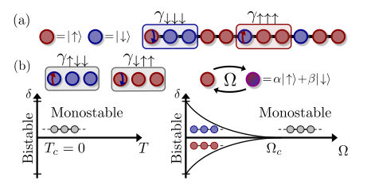
<figcaption class="paper-figure-caption"><b>Fig 1.</b> Figure 1. (a) The far-East model: dissipation acts on the left site of the three-sites plaquette, aligning it with the majority within the plaquette itself. (b) Sketch of the steady-phase di- agram: classical fluctuations (of strength T = (γ↓↑↑+γ↑↓↓)/γ) allow to flip the spin against the majority of the plaquette, vi- olating the kinetic constraint. The transverse field Ωinduces a coherent superposition of the up and down state. Bistabil- ity is fragile with respect to classical fluctuations, yielding a monostable phase for any T &gt; 0. On the contrary, quantum fluctuations stabilize collective behaviors leading to an ex- tended bistable region (up to a finite critical field Ωc/γ ≈0.15 at δ =...</figcaption>
</figure>
<figure class="paper-figure-card">
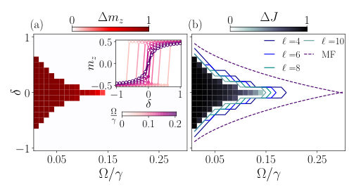
<figcaption class="paper-figure-caption"><b>Fig 2.</b> Figure 2. (a): Phase diagram for cluster size ℓ= 10 obtained through the hysteresis cycle of the global magnetization (in- set). The forward and backward sweep have opposite magne- tization in the bistable phase, resulting in finite ∆mz, sharply vanishing at the phase boundary Ωc(δ). (b): Similar features are observed for the emission rates, indicating that bistabil- ity affects the dynamical behavior of trajectories. Solid lines represent the phase boundaries Ωc(δ) obtained for different cluster sizes ℓ, while the dashed line is the mean-field result, immediately shrinking as correlations are included.</figcaption>
</figure>
<figure class="paper-figure-card">
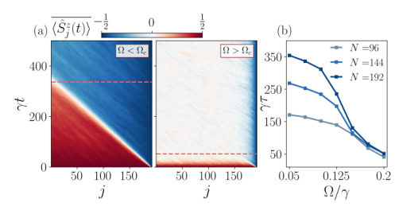
<figcaption class="paper-figure-caption"><b>Fig 3.</b> Figure 3. (a): Average local magnetization dynamics. In the bistable phase (left, Ω= 0.075γ), the boundary between up and down spins is well defined and propagates ballisti- cally to the left edge of the chain. On the other hand, in the normal phase (right, Ω= 0.2γ), local magnetization is quickly scrambled across both space and time. (b): Relax- ation time of |ψDW⟩across the phase transition. Bistability results in τ ∝N; at large Ω≥0.15γ, instead, the system quickly reaches the steady-state, irrespective of system size. Data are obtained averaging over N = 500 trajectories.</figcaption>
</figure>
<figure class="paper-figure-card">
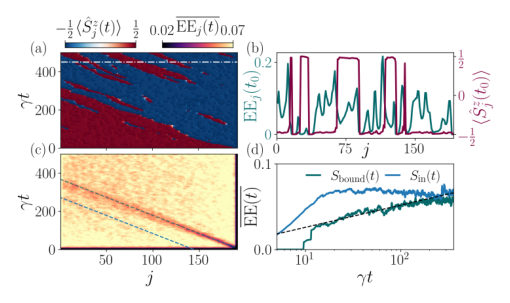
<figcaption class="paper-figure-caption"><b>Fig 4.</b> Figure 4. (a): In the bistable phase, large regions in spacetime where the system is approximately in one of the 2 steady-states coexist; this is a typical feature of dynamical heterogeneity. (b): Magnetization and entanglement entropy profiles at fixed time t0 = 450/γ [dotted white line in panel (a)]. Dynamical heterogeneity manifests in the sudden drop of entanglement entropy at the boundary between different magnetization regions. (c): Average entanglement dynamics in the bistable phase (Ω= 0.075γ) show a clear separation between the two regions inside and outside the large island, divided by a boundary with low entanglement entropy. (d): Entanglement entropy inside the island quickly...</figcaption>
</figure>
<figure class="paper-figure-card">
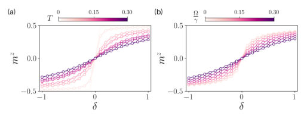
<figcaption class="paper-figure-caption"><b>Fig 5.</b> Figure 5. Absence of hysteresis in sweeps of the global mag- netization vs. δ (a) at Ω= 0 with classical MC simulations and T ∈[0.01, 0.30]; (b) for cluster size ℓ= 10 at T = 0.2 and Ω∈[0.01, 0.30]. Contrary to the inset of Figure 2, the inclusion of classical fluctuations results in the forward and backward sweeps having the same magnetization, implying the absence of bistability.</figcaption>
</figure>
</div>

<p><strong>Summary.</strong> This research analyzes collective dynamics in a dissipative spin chain, demonstrating how the interplay between quantum and classical noise dictates the system's phase structure. The authors find that while quantum fluctuations can stabilize complex, bistable phases, the introduction of classical noise destroys this collective behavior. The study employs advanced theoretical tools like Cluster Mean-Field theory to map out these non-equilibrium phase boundaries.</p>
<p><strong>Why it may be interesting.</strong> This work directly addresses non-equilibrium phase transitions and the role of noise (both classical and quantum) in shaping the steady-state structure, which is central to modern statistical mechanics and open quantum systems.</p>
<details>
<summary>Detailed structure</summary>
<p><strong>Main problem.</strong> The paper investigates the competition between classical and quantum fluctuations in determining the collective dynamics and phase structure of many-body systems near phase transitions.</p>
<p><strong>Main result.</strong> The system exhibits collective dynamics that are robust to quantum fluctuations (maintaining bistability) but are suppressed and eliminated by the introduction of classical fluctuations.</p>
<p><strong>Method.</strong> The study employs a combination of Cluster Mean-Field theory, stochastic tensor-network methods, and analysis of quantum jump unravellings.</p>
<p><strong>Model / system.</strong> The model is a quantum dissipative spin chain, specifically the far-East model (fEM), whose dynamics are governed by a Lindblad master equation incorporating both coherent Hamiltonian evolution and constrained dissipation.</p>
<p><strong>Key observables.</strong> Local magnetization ($m_\alpha$), entanglement dynamics, bistability order parameters ($\Delta m_z$, $\Delta J$), and relaxation time ($   au$).</p>
<p><strong>Important parameters / regimes.</strong> Dissipation strength ($\gamma$), transverse field ($\Omega$), bias ($\delta$), and classical fluctuation strength ($T$).</p>
<p><strong>Assumptions / limitations.</strong> The analysis utilizes approximations such as the Cluster Mean-Field ansatz and relies on analyzing the steady-state solutions of the master equation.</p>
<p><strong>Figures summary.</strong> Figures illustrate the phase diagram showing hysteresis (bistability) in magnetization ($\Delta m_z$) and emission rates ($\Delta J$) when quantum fluctuations are present, contrasting this with the disappearance of hysteresis when classical fluctuations are introduced.</p>
<p><strong>Paper structure.</strong> The paper first establishes the model and the general competition between fluctuation types. It then uses Mean-Field and Cluster Mean-Field approaches to map the phase diagram, demonstrating bistability. Finally, it focuses on the role of classical noise, showing its destructive effect on the quantum-stabilized collective dynamics.</p>
</details>
<details>
<summary>Abstract</summary>
<p>Collective non-equilibrium phenomena in many-body systems are strongly influenced by fluctuations, particularly in the vicinity of phase transitions, where the interplay between classical and quantum effects can alter cooperative behavior. Here, we investigate this classical-quantum competition in a kinetically constrained spin chain, the dissipative far-East model. In absence of fluctuations, the system exhibits emergent collective dynamics, resulting in phase coexistence. We find that this phenomenon is robust to quantum fluctuations, which further stabilize it, whereas classical fluctuations suppress phase coexistence at long times. We map out the steady-state phase diagram using a cluster mean-field approach and characterize the dynamics with stochastic tensor-network methods. Within the bistable phase we identify signatures of dynamical heterogeneity in both the local magnetization and the entanglement dynamics. This highlights how competing quantum fluctuations and classical kinetic constraints shape the relaxation dynamics and the phase structure of many-body systems.</p>
</details>
<p><sub><a href="#top">↑ back to top</a></sub></p>

<p><a id="paper-2609.40026"></a></p>
<h3 id="measurement-induced-dynamics-and-emergent-symmetries-of-particles-moving-in-a-one-dimensional-lattice"><a href="http://arxiv.org/abs/2609.40026v1">Measurement-induced dynamics and emergent symmetries of particles moving in a one-dimensional lattice</a></h3>
<p><strong>Authors:</strong> Salvatore Di Lorenzo, Klaus Mølmer<br>
<strong>Type:</strong> theory · <strong>Category:</strong> other · <strong>PDF:</strong> <a href="https://arxiv.org/pdf/2609.40026v1">https://arxiv.org/pdf/2609.40026v1</a><br>
<strong>Analysis basis:</strong> full PDF text, analyzed in chunks
<strong>Topic relevance:</strong> 🔥 <code>quantum measurements</code> <strong>5/5</strong> · <code>analog quantum simulation</code> <strong>3/5</strong> · <code>driven-dissipative phase transition</code> <strong>3/5</strong> · <code>methods for driven-dissipative</code> <strong>3/5</strong> · <code>correlated / nonlocal dissipation</code> <strong>2/5</strong> · <code>non-equilibrium universality</code> <strong>2/5</strong> · <code>Keldysh / 2PI / non-Gaussian methods</code> <strong>1/5</strong></p>
<div class="figure-strip-hint">↔ Scroll figures horizontally</div>
<div class="paper-figures-scroll">
<figure class="paper-figure-card">
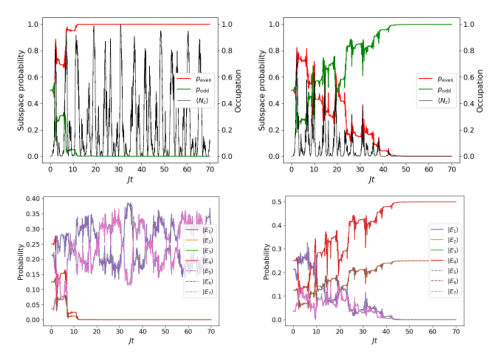
<figcaption class="paper-figure-caption"><b>Fig 1.</b> Figure 2: The upper panels show the mean population of the probed, middle site, and the ensuing selection of the even and odd subspace, from the initial state |ψ(0)⟩= |1⟩. The lower panels show the correspond- ing evolution of the energy eigenstate populations. The even subspace shows internal fluctuations between differ- ent eigenstates, whereas in the odd subspace the ratios between the populations remain constant.</figcaption>
</figure>
<figure class="paper-figure-card">
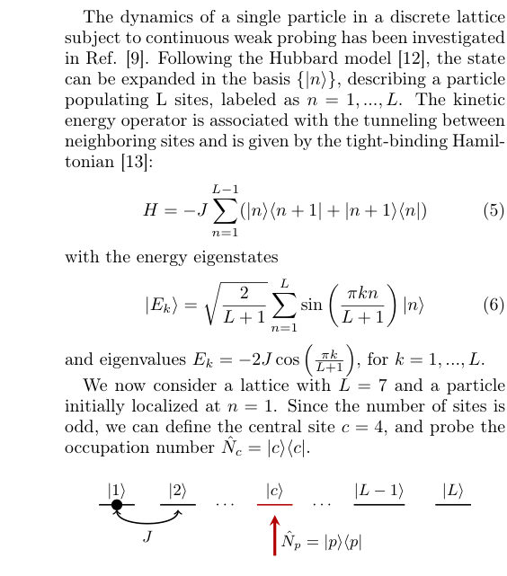
<figcaption class="paper-figure-caption"><b>Fig 2.</b> Figure 1: Probing scheme for the one-particle chain.</figcaption>
</figure>
<figure class="paper-figure-card">
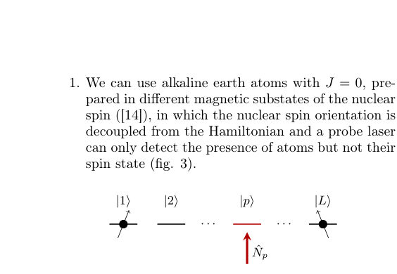
<figcaption class="paper-figure-caption"><b>Fig 3.</b> Figure 3: Same-lattice model for indistinguishable par- ticles in the state |1⟩|L⟩. The arrows indicate that the two atoms populate different internal, nuclear spin states that are, however, not resolved by the measurement.</figcaption>
</figure>
<figure class="paper-figure-card">
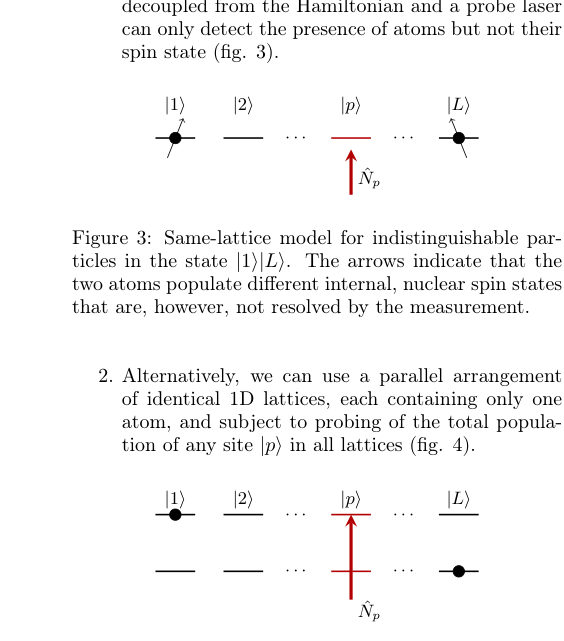
<figcaption class="paper-figure-caption"><b>Fig 4.</b> Figure 4: Parallel lattices occupied by single atoms (shown here in the product state |1⟩|L⟩). The probe beam crosses both lattices and does not distinguish be- tween the atoms.</figcaption>
</figure>
<figure class="paper-figure-card">
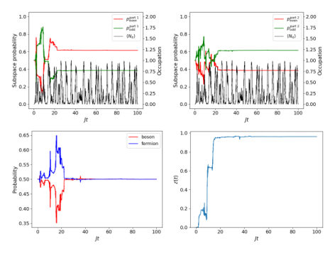
<figcaption class="paper-figure-caption"><b>Fig 5.</b> Figure 5: Selection of the EO parity subspace, from |ψ(0)⟩= |1⟩|2⟩, by probing the central site c = 4. The particles become entangled as a result of the incapability of measurement to distinguish which particle is in the even state or odd state. Nothing can be inferred about exchange symmetry, which remains half-bosonic half-fermionic.</figcaption>
</figure>
</div>

<p><strong>Summary.</strong> This paper explores how continuous measurement of a single site in a 1D lattice can fundamentally alter the quantum state of multiple particles. By analyzing the dynamics using stochastic master equations, the authors demonstrate that the system is forced into distinct, stable symmetry sectors—bosonic, fermionic, and a novel immanonic type. This highlights measurement's power to select specific symmetries in quantum many-body systems.</p>
<p><strong>Why it may be interesting.</strong> This work directly addresses open quantum systems dynamics under continuous monitoring, a core topic in quantum optics and AMO physics, showing how measurement acts as a non-unitary selection mechanism for quantum states.</p>
<details>
<summary>Detailed structure</summary>
<p><strong>Main problem.</strong> The paper investigates how continuous quantum measurements can induce entanglement and select definite values for fundamental system properties, such as wave function parity and permutation symmetry, in interacting particles.</p>
<p><strong>Main result.</strong> Weak continuous probing of a lattice site can steer multi-particle quantum systems into stable symmetry sectors corresponding to bosonic, fermionic, or novel immanonic symmetries.</p>
<p><strong>Method.</strong> The dynamics are analyzed using the Stochastic Schrödinger Equation (SSE) and Stochastic Master Equation (SME) formalism, extending the Ehrenfest theorem to account for measurement back-action.</p>
<p><strong>Model / system.</strong> The system models tunneling motion of particles on a one-dimensional lattice, analyzed using tight-binding Hamiltonians and incorporating permutation operators for multi-particle states.</p>
<p><strong>Key observables.</strong> Entanglement entropy (von Neumann), expectation values of symmetry projection operators ($\langle \hat{P}_{	ext{bos}} 
angle$, $\langle \hat{P}_{	ext{ferm}} 
angle$, $\langle \hat{P}(2,1) 
angle$), and the largest eigenvalue ($\lambda_{\max}$) of the reduced density matrix.</p>
<p><strong>Important parameters / regimes.</strong> The probing strength (weak continuous probing), the number of particles (two or three), and the lattice hopping parameter ($J$).</p>
<p><strong>Assumptions / limitations.</strong> The symmetry classification applies only to the subsector of the Hilbert space accessed by the continuous measurements, not the entire space.</p>
<p><strong>Figures summary.</strong> Figures illustrate the probing scheme for one particle, showing parity selection; and for two/three particles, they show the evolution of symmetry projectors and occupation numbers for different symmetry sectors.</p>
<p><strong>Paper structure.</strong> The paper progresses from single-particle parity selection to two-particle symmetry selection (bosonic/fermionic), and finally extends the analysis to three particles to identify and confirm the existence of a third symmetry class, the (2,1)-immanon symmetry.</p>
</details>
<details>
<summary>Abstract</summary>
<p>Continuous measurements simultaneously reveal and modify the dynamics of a quantum system. In this work we consider the tunneling motion of particles between the sites of a one-dimensional lattice. We investigate how weak continuous probing of the occupation of a single lattice site induces entanglement and selects definite values for system properties such as wave function parity and permutation symmetry. Our simulations show how continuous measurement can steer systems of two and three particles, with no prior permutation symmetry, into stable bosonic, fermionic and parastatistical symmetry sectors.</p>
</details>
<p><sub><a href="#top">↑ back to top</a></sub></p>

<p><a id="paper-2609.40268"></a></p>
<h3 id="long-lived-divergence-from-equilibrium-of-electrons-nuclear-spins-and-lattice-for-a-solid-state-ion-trap-at-low-temperature"><a href="http://arxiv.org/abs/2609.40268v1">Long-lived divergence from equilibrium of electrons, nuclear spins and lattice for a solid state ion trap at low temperature</a></h3>
<p><strong>Authors:</strong> Guy Matmon, Manuel Grimm, Markus Mueller, Byron J. Villis, Andrew J. Fisher, Gabriel Aeppli<br>
<strong>Type:</strong> both · <strong>Category:</strong> other · <strong>PDF:</strong> <a href="https://arxiv.org/pdf/2609.40268v1">https://arxiv.org/pdf/2609.40268v1</a><br>
<strong>Analysis basis:</strong> full PDF text, analyzed in chunks
<strong>Topic relevance:</strong> 🔥 <code>non-equilibrium universality</code> <strong>4/5</strong> · 🔥 <code>scars &amp; prethermalization</code> <strong>4/5</strong> · <code>analog quantum simulation</code> <strong>3/5</strong> · <code>correlated / nonlocal dissipation</code> <strong>3/5</strong> · <code>driven-dissipative phase transition</code> <strong>3/5</strong> · <code>Keldysh / 2PI / non-Gaussian methods</code> <strong>2/5</strong> · <code>QC/QI experiment</code> <strong>2/5</strong> · <code>methods for driven-dissipative</code> <strong>2/5</strong> · <code>quantum measurements</code> <strong>2/5</strong> · <code>quantum optics experiment</code> <strong>1/5</strong></p>
<div class="figure-strip-hint">↔ Scroll figures horizontally</div>
<div class="paper-figures-scroll">
<figure class="paper-figure-card">
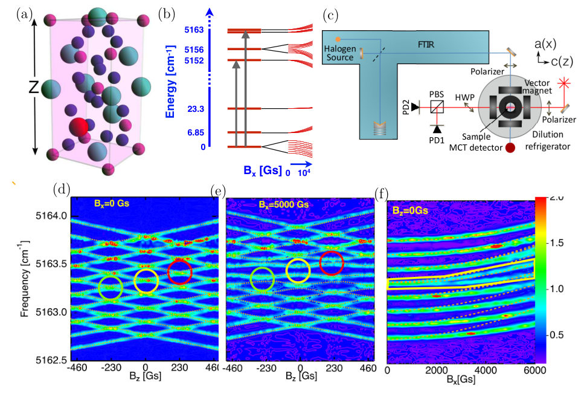
<figcaption class="paper-figure-caption"><b>Fig 1.</b> Figure 1: Energy levels and setup. (a) A LiY1−xHoxF4 unit cell with a Ho3+ ion in red.</figcaption>
</figure>
<figure class="paper-figure-card">
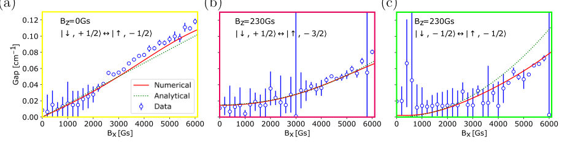
<figcaption class="paper-figure-caption"><b>Fig 2.</b> Figure 2: Calculated gaps in a transverse field. (a) The evolution of gaps between HF levels</figcaption>
</figure>
<figure class="paper-figure-card">
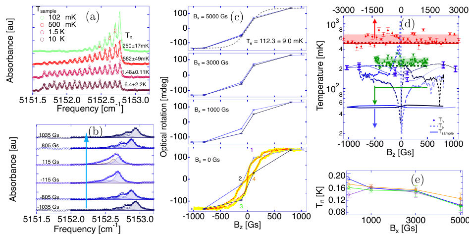
<figcaption class="paper-figure-caption"><b>Fig 3.</b> Figure 4: Thermalization. (a) FTIR spectra at different sample temperatures, with</figcaption>
</figure>
<figure class="paper-figure-card">
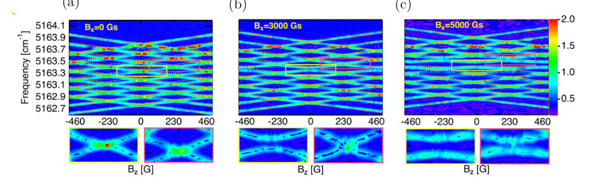
<figcaption class="paper-figure-caption"><b>Fig 4.</b> Figure 7: HF levels in a longitudinal magnetic field sweep. (a) – (c) Longitudinal field sweep</figcaption>
</figure>
<figure class="paper-figure-card">

<figcaption class="paper-figure-caption"><b>Fig 5.</b> Fig 8 shows the measured and calculated absorption lines as a function of transverse field.</figcaption>
</figure>
</div>

<p><strong>Summary.</strong> This research explores the complex issue of thermalization in a solid-state ion trap system by studying the coupling between electron, nuclear spin, and lattice degrees of freedom. Using optical spectroscopy and magnetization measurements, the authors demonstrate that at very low temperatures, the system can maintain distinct, non-equilibrium temperatures for its various components. This suggests that energy dissipation pathways are highly dependent on the experimental history and that nuclear spin dynamics play a crucial, non-phonon-mediated role in relaxation.</p>
<p><strong>Why it may be interesting.</strong> This work is highly relevant as it tackles non-equilibrium dynamics in strongly coupled quantum systems, providing experimental evidence for energy partitioning and relaxation pathways that deviate significantly from simple thermal models, which is crucial for quantum control.</p>
<details>
<summary>Detailed structure</summary>
<p><strong>Main problem.</strong> The paper investigates the fundamental problem of equilibration, specifically how different quantum subsystems (electrons, nuclear spins, and lattice/phonons) thermalize among themselves and with each other at low temperatures.</p>
<p><strong>Main result.</strong> The authors find evidence that at low temperatures, the system can enter vastly different non-equilibrium states depending on the experimental protocol, with nuclear spins showing signs of diffusing and equilibrating independently of the lattice.</p>
<p><strong>Method.</strong> The study combines high-resolution optical spectroscopy (FTIR) and magnetization measurements (Faraday rotation) with theoretical modeling to track state populations and energy levels.</p>
<p><strong>Model / system.</strong> The system is a solid-state ion trap using a rare earth ion ($  ext{Ho}^{3+}$) in a salt ($  ext{LiYF}_4$), which acts as a model for coupled electron-nuclear spin dynamics in a solid matrix.</p>
<p><strong>Key observables.</strong> Population of the 16 hyperfine states, effective electronic and nuclear spin temperatures ($T_e, T_n$), and magnetization hysteresis loops.</p>
<p><strong>Important parameters / regimes.</strong> Low temperatures (sub-Kelvin regime), external magnetic fields ($B_z, B_x$), and the coupling strengths between spin and lattice degrees of freedom.</p>
<p><strong>Assumptions / limitations.</strong> The standard scenario of phonon-assisted tunneling is ruled out by theory, and the analysis relies on fitting state populations to Gibbs distributions.</p>
<p><strong>Figures summary.</strong> Figures illustrate the mapping of electronuclear level schemes via avoided crossings, the divergence of measured spin temperatures ($T_e, T_n$) from the lattice temperature ($T_{sample}$), and the closing of temperature hysteresis with increasing transverse fields.</p>
<p><strong>Paper structure.</strong> The paper progresses from establishing the general problem of equilibration to detailing the experimental measurements on the $    ext{Ho}^{3+}$ system, presenting evidence for non-equilibrium temperature distributions, and finally proposing theoretical insights into the dominant relaxation mechanisms (e.g., nuclear spin diffusion facilitating fast dynamics).</p>
</details>
<details>
<summary>Abstract</summary>
<p>A fundamental problem in physics as well as engineering is equilibration. For example, the regulation of thermal and quantum fluctuations enables thermal and quantum annealing of complex systems. A key question is how different subsystems, such as electrons, nuclear spins and phonons equilibrate on their own as well as with each other. Level crossings play a special role in the dynamics of coupled degrees of freedom, for it is here that entanglement can be maximized to speed up relaxation. Here we use optical methods to establish the electronuclear level scheme, including avoided and unavoided crossings, and to examine equilibration of a rare earth ion (Ho$^{3+}$) in a salt (LiYF$_4$), a model system with quantum fluctuations which can be tuned via an external magnetic field transverse to the crystallographic long axis of the tetragonal host. We track the state of the system by monitoring the populations of the levels as a function of swept longitudinal fields, and discover that at low temperatures, depending on the experimental protocol, vastly different non-equilibrium states arise. We find evidence that nuclear spin excitations diffuse and equilibrate without the assistance of phonons, and tend to acquire higher effective temperatures than the electronic spins and the yet cooler lattice. A theory of thermally assisted tunneling rules out the standard scenario of phonon -assisted tunneling, and instead suggests that fast dynamics at level anti-crossings are facilitated entirely by nuclear spin diffusion. This provides a new understanding of thermalization and related slow relaxation phenomena in dense, multi-component interacting quantum systems.</p>
</details>
<p><sub><a href="#top">↑ back to top</a></sub></p>

<p><a id="paper-2609.38352"></a></p>
<h3 id="interferometric-readout-of-momentum-space-topology-in-a-programmable-dissipative-photonic-circuit"><a href="http://arxiv.org/abs/2609.38352v1">Interferometric Readout of Momentum-Space Topology in a Programmable Dissipative Photonic Circuit</a></h3>
<p><strong>Authors:</strong> Andrea Cataldo, Emil J. Bergholtz, Daniel Leykam, Jun Gao, Ali W. Elshaari<br>
<strong>Type:</strong> experiment · <strong>Category:</strong> other · <strong>PDF:</strong> <a href="https://arxiv.org/pdf/2609.38352v1">https://arxiv.org/pdf/2609.38352v1</a><br>
<strong>Analysis basis:</strong> full PDF text, analyzed in chunks
<strong>Topic relevance:</strong> 🔥 <code>analog quantum simulation</code> <strong>4/5</strong> · <code>driven-dissipative phase transition</code> <strong>3/5</strong> · <code>interference shaping light</code> <strong>3/5</strong> · <code>methods for driven-dissipative</code> <strong>3/5</strong> · <code>quantum optics experiment</code> <strong>3/5</strong> · <code>non-equilibrium universality</code> <strong>2/5</strong> · <code>quantum measurements</code> <strong>2/5</strong> · <code>Keldysh / 2PI / non-Gaussian methods</code> <strong>1/5</strong> · <code>QC/QI experiment</code> <strong>1/5</strong> · <code>correlated / nonlocal dissipation</code> <strong>1/5</strong></p>
<div class="figure-strip-hint">↔ Scroll figures horizontally</div>
<div class="paper-figures-scroll">
<figure class="paper-figure-card">
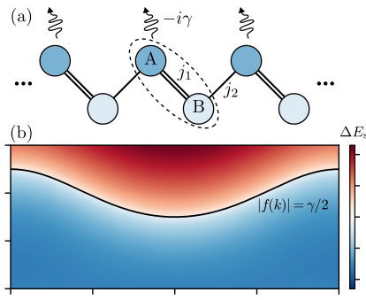
<figcaption class="paper-figure-caption"><b>Fig 1.</b> FIG. 1. (a) Real-space representation of the non-Hermitian SSH lattice, with intracell and intercell couplings j1 and j2, respectively, and loss −iγ on the A sites. The dashed el- lipse marks the (A, B) unit cell. (b) Momentum-space band splitting ∆Es, piecewise defined by ∆Es = Re(E+ −E−) for |f(k)| ≥γ/2 and ∆Es = −Im(E+ −E−) for |f(k)| &lt; γ/2, shown in the (k, j2/j1) plane for j1 = 0.5 and γ = 4. The black curve marks the EP condition |f(k)| = γ/2.</figcaption>
</figure>
<figure class="paper-figure-card">
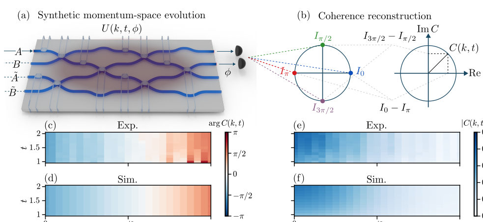
<figcaption class="paper-figure-caption"><b>Fig 2.</b> FIG. 2. (a) Schematic of the interferometric readout for synthetic momentum-space evolution on a programmable PIC. Light is launched into spatial mode A, with (A, B) spanning the signal subspace and ( ˜A, ˜B) the ancilla subspace. The PIC implements a compiled 4 × 4 transformation U(k, t, ϕ) = Uint(ϕ)Udil(k, t), which combines the dilation and phase-shifted interferometric readout. Two quadratures are formed as shown in (b), allowing reconstruction of the coherence C(k, t) as in Eq. (2). For the parameters j1 = 0.5, j2 = 1.5, and γ = 4, the relative phase arg C(k, t) is obtained for the experiment (c) and simulation (d), with (e,f) showing the corresponding magnitude |C(k, t)|. All data are...</figcaption>
</figure>
<figure class="paper-figure-card">
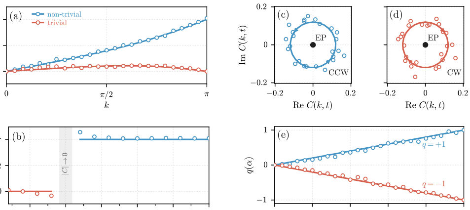
<figcaption class="paper-figure-caption"><b>Fig 3.</b> FIG. 3. Extraction of momentum-space topology. (a) Accumulated Zak phase Zacc(k, t), as defined by Eq. (3), for the non- trivial and trivial cases, corresponding to (j1, j2, γ) = (0.5, 1.5, 4) and (1.5, 0.5, 4), respectively. Circles denote experiment and lines the simulation. The extracted values at k = π are 1.02π and −0.00148π. (b) Zak phase Z(t) versus j2/j1 for fixed j1 = 0.5, showing quantization to 0 and π, with average values of −0.0254π and 1.04π on the two sides of the transition. A shaded region near the transition indicates |C| →0. Panels (a,b) are shown for t = 2, with Nk = 25 uniformly spaced momentum points over k ∈[0, π], i.e. 100 unitaries per parameter set. (c,d)...</figcaption>
</figure>
<figure class="paper-figure-card">
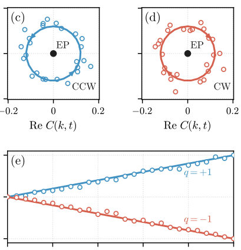
<figcaption class="paper-figure-caption"><b>Fig 4.</b> Fig. 3(a) shows Zacc(k, t) for the non-trivial and trivial cases. In the non-trivial case, it increases progressively with k and reaches nearly π at the boundary, consistent with a net winding. In the trivial case, it shows only a small excursion and returns nearly to zero at the end, indicating vanishing net winding. This behavior is con- sistent with the underlying model, where f(k) encloses the origin in the former case, whereas it does not in the latter. The distinction of topology is thus already evi- dent throughout the accumulated phase trace. The same distinction is seen in Fig. 3(b), which plots the Zak phase Z(t) = Zacc(π, t) against j2/j1 for fixed j1 = 0.5. There, the measured...</figcaption>
</figure>
<figure class="paper-figure-card">
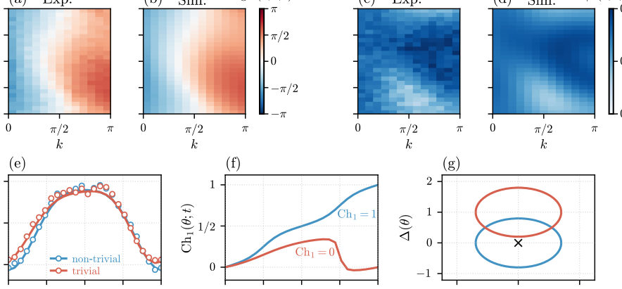
<figcaption class="paper-figure-caption"><b>Fig 5.</b> FIG. 4. Higher-dimensional synthetic space extension of a non-Hermitian Rice-Mele pump. (a-d) Reconstructed coherence of the non-trivial pump cycle with (j0, δ, ∆c, ∆0, γ, t) = (2, 0.7, 0, 0.8, 2, 0.25), shown as phase and magnitude for experiment and simulation. The input state is (1, −i)T / √</figcaption>
</figure>
</div>

<p><strong>Summary.</strong> This paper presents a novel experimental technique using programmable photonic circuits to measure topological invariants in non-Hermitian systems, overcoming the challenge posed by strong dissipation. By implementing the dynamics in synthetic momentum space and using phase-shifted interferometry, the authors successfully read out quantities like the Zak phase and the first Chern number. This establishes a programmable platform for studying momentum-space topology in open quantum systems.</p>
<p><strong>Why it may be interesting.</strong> This work is highly relevant as it merges concepts from open quantum systems (dissipation, non-Hermiticity) with advanced quantum optics/photonics platforms to measure fundamental topological properties, providing a concrete experimental roadmap for studying non-Hermitian topology.</p>
<details>
<summary>Detailed structure</summary>
<p><strong>Main problem.</strong> The core challenge is reading out topological information encoded in the phase of the bulk evolution in non-Hermitian systems, as this phase is typically suppressed by strong dissipation.</p>
<p><strong>Main result.</strong> The authors successfully demonstrated a programmable method using photonic circuits to measure topological invariants, such as the Zak phase and the first Chern number, in the presence of strong dissipation.</p>
<p><strong>Method.</strong> They employ a programmable photonic integrated circuit to simulate non-Hermitian dynamics, embedding the non-unitary evolution into a unitary one via Sz.-Nagy dilation, and then use phase-shifted interferometry to recover the phase information.</p>
<p><strong>Model / system.</strong> The study uses the non-Hermitian Su-Schrieffer-Heeger (SSH) model and extends it to a synthetic torus via a Rice-Mele pump. The dynamics are realized in a programmable photonic integrated circuit (PIC) simulating synthetic momentum space.</p>
<p><strong>Key observables.</strong> Zak phase (Zacc), coherence winding (q), and the first Chern number (Ch_1).</p>
<p><strong>Important parameters / regimes.</strong> Dissipation strength ($\gamma$), coupling constants ($j_1, j_2$), and the parameters defining the pump cycle.</p>
<p><strong>Assumptions / limitations.</strong> The method does not require real-space boundaries or spectrally resolved edge modes, though phase readout is ill-conditioned where coherence approaches zero.</p>
<p><strong>Figures summary.</strong> Figures illustrate the SSH lattice and band splitting, the interferometric readout scheme, the extraction of the Zak phase and EP-induced winding, and the extension to a synthetic torus showing the reconstructed coherence and inferred Ch_1.</p>
<p><strong>Paper structure.</strong> The paper progresses from defining the problem (dissipation suppressing phase) to detailing the simulation platform (PIC, unitary dilation), presenting the measurement techniques (interferometry for phase/coherence), and finally demonstrating the measurement of topological invariants (Zak phase, Ch_1) for both 1D and 2D synthetic systems.</p>
</details>
<details>
<summary>Abstract</summary>
<p>Topology under non-Hermitian dynamics is encoded in the phase of the bulk evolution, yet strong dissipation suppresses the amplitudes carrying it. We resolve this using a programmable photonic integrated circuit that implements such dynamics in synthetic momentum space through unitary dilation, with the phase recovered by phase-shifted interferometry. For the non-Hermitian Su-Schrieffer-Heeger model, the method distinguishes trivial and non-trivial Zak phases and yields a coherence winding $q=\pm 1$ induced by an exceptional point. Extending to a synthetic torus via a Rice-Mele pump gives the first Chern number $\mathrm{Ch}_1=0,1$ for trivial and non-trivial cycles, showing a programmable route to momentum-space topology under strongly dissipative non-Hermitian dynamics.</p>
</details>
<p><sub><a href="#top">↑ back to top</a></sub></p>

<p><a id="paper-2609.38933"></a></p>
<h3 id="boundary-rank-obstructions-and-measurement-assisted-recovery-in-dissipative-flat-band-preparation"><a href="http://arxiv.org/abs/2609.38933v1">Boundary-rank obstructions and measurement-assisted recovery in dissipative flat-band preparation</a></h3>
<p><strong>Authors:</strong> Mingdi Xu<br>
<strong>Type:</strong> theory · <strong>Category:</strong> strongly correlated electrons · <strong>PDF:</strong> <a href="https://arxiv.org/pdf/2609.38933v1">https://arxiv.org/pdf/2609.38933v1</a><br>
<strong>Analysis basis:</strong> full PDF text, analyzed in chunks
<strong>Topic relevance:</strong> 🔥 <code>quantum measurements</code> <strong>4/5</strong> · <code>analog quantum simulation</code> <strong>3/5</strong> · <code>correlated / nonlocal dissipation</code> <strong>3/5</strong> · <code>driven-dissipative phase transition</code> <strong>3/5</strong> · <code>methods for driven-dissipative</code> <strong>3/5</strong> · <code>Keldysh / 2PI / non-Gaussian methods</code> <strong>2/5</strong> · <code>non-equilibrium universality</code> <strong>2/5</strong> · <code>scars &amp; prethermalization</code> <strong>1/5</strong></p>
<div class="figure-strip-hint">↔ Scroll figures horizontally</div>
<div class="paper-figures-scroll">
<figure class="paper-figure-card">
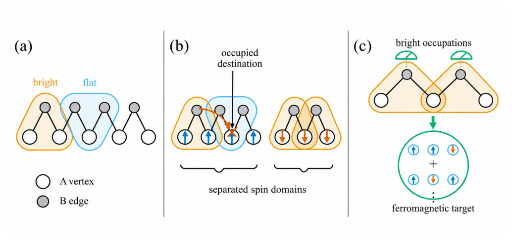
<figcaption class="paper-figure-caption"><b>Fig 1.</b> FIG. 1. Geometry and dissipative operations. (a) A vertex-edge decorated chain illustrates the compact supports: a flat orbital is centered on an 𝐴vertex and overlaps its incident 𝐵decorations, whereas a bright orbital is centered on a 𝐵decoration and overlaps its two endpoint 𝐴sites. Colored contours indicate support, not amplitudes or mutually orthogonal orbitals. (b) Filling all flat destinations of occupied sources within separated spin domains blocks transfer while avoiding physical doublons. The diagram is conceptual; Eqs. (13) and (23) specify the actual many-body constructions. (c) Adjacent bright-occupation measurements overlap on an 𝐴site and do not commute. With the original...</figcaption>
</figure>
<figure class="paper-figure-card">
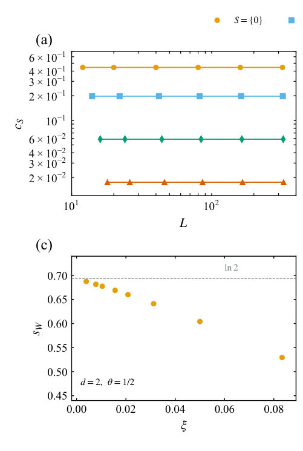
<figcaption class="paper-figure-caption"><b>Fig 2.</b> FIG. 2. Static checks at 𝜆= 1/ √</figcaption>
</figure>
<figure class="paper-figure-card">
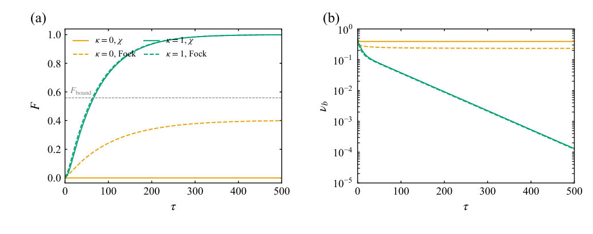
<figcaption class="paper-figure-caption"><b>Fig 3.</b> FIG. 3. Long-time four-cell single-exit dynamics at 𝑝= 𝑞= 2 and 𝐻= 0 through 𝜏= 𝛾𝑡= 500. (a) Target fidelity 𝐹; (b) normalized physical bright population 𝜈𝑏= ⟨𝑁𝑏⟩/𝑀. Solid curves start from the target-orthogonal wrong dark state 𝜒, and dashed curves start from the physical Fock state with up spins on 𝐴0, 𝐵0 and down spins on 𝐴2, 𝐵2. Orange and green denote 𝜅= 0 and 1, respectively. The gray dashed line in (a) is the all-time bound 𝐹≤0.5589846446 for the Fock state at 𝜅= 0 only. The long trajectories use the exact translation-twirl reduction: the reconstructed density matrix is the translation-averaged state, while the displayed translation-invariant observables agree with unreduced...</figcaption>
</figure>
<figure class="paper-figure-card">
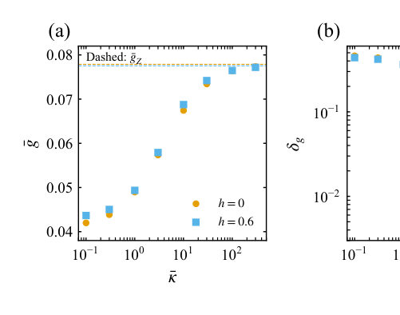
<figcaption class="paper-figure-caption"><b>Fig 4.</b> FIG. 4. Fixed-size strong-dephasing comparison for the three-cell endpoint protocol at 𝜆= 1/ √</figcaption>
</figure>
</div>

<p><strong>Summary.</strong> This theoretical paper analyzes the limitations of cooling protocols for preparing interacting flat-band states, showing that Pauli exclusion can cause preparation failure. It quantifies this failure using graph theory (Gram matrix rank) and proves that incorporating measurement-assisted dissipation can restore the system's attraction to the desired ferromagnetic target state.</p>
<p><strong>Why it may be interesting.</strong> This work directly addresses non-equilibrium state preparation in correlated systems, which is a major focus area connecting open quantum systems theory with condensed matter physics.</p>
<details>
<summary>Detailed structure</summary>
<p><strong>Main problem.</strong> The paper investigates the fundamental obstructions to preparing an interacting flat-band target state using number-conserving cooling protocols in quantum many-body systems.</p>
<p><strong>Main result.</strong> It establishes that the rank of a cut block of the flat-orbital Gram matrix provides a quantitative bound on the residual source directions, and that measurement-assisted recovery can restore global attraction to the target state.</p>
<p><strong>Method.</strong> The analysis employs spectral methods, analyzing the structure of the dark subspace, and deriving bounds using the rank of matrices associated with spatial cuts.</p>
<p><strong>Model / system.</strong> The system is modeled on vertex-edge decorated graphs, studying particle dynamics in a fixed particle sector, often related to flat-band ferromagnetism.</p>
<p><strong>Key observables.</strong> Fidelity, bright-particle density, and the rank of the cut block of the flat-orbital Gram matrix.</p>
<p><strong>Important parameters / regimes.</strong> The cooling range, the graph structure (decorated hypercubic lattices), and the measurement strength ($\kappa$).</p>
<p><strong>Assumptions / limitations.</strong> The analysis assumes the existence of a target state (ferromagnet) and relies on specific conditions for measurement-assisted recovery to guarantee convergence.</p>
<p><strong>Figures summary.</strong> Figure 1 illustrates the geometry of the decorated chain, showing the supports of flat/bright orbitals, the blocking mechanism in separated spin domains, and the restoration of attraction via bright-occupation measurements.</p>
<p><strong>Paper structure.</strong> The paper progresses by first identifying the failure mechanism (Pauli exclusion blocking cooling), quantifying this failure using the Gram matrix rank, and then proving recovery mechanisms using measurement-assisted dynamics and dephasing.</p>
</details>
<details>
<summary>Abstract</summary>
<p>Number-conserving cooling can fail to prepare an interacting flat-band target when Pauli exclusion blocks its transfer destinations. We study this failure on vertex-edge decorated graphs at one particle per flat orbital. The rank of a cut block of the flat-orbital Gram matrix bounds the number of residual source directions that can remain flat. For sublinear-range cooling with no Hamiltonian term, separated spin domains on periodic decorated hypercubic lattices support exponentially many stationary states with a nonzero bright-particle density. For a chain with fixed finite cooling range, we construct a physical Fock initial state whose overlap with a wrong dark state is independent of system size. This gives fidelity and bright-density bounds valid at every time. In higher dimensions, the bare overlap decays with boundary area, while local boundary rotations prepare states with a finite failure weight in constant circuit depth. Dephasing the occupations of all compact bright modes restores global attraction to the ferromagnetic target when the graph and cooling destinations satisfy the stated conditions. The result allows Hamiltonians that preserve the target. The compressed dynamics in the strong-dephasing limit also remains attractive and has a positive gap at each fixed size. Gram calculations, finite-system dynamics, and Liouvillian spectra test the analytic results. Weak-dephasing and particle-transport bounds constrain the preparation time despite eventual convergence.</p>
</details>
<p><sub><a href="#top">↑ back to top</a></sub></p>

<p><a id="paper-2609.40110"></a></p>
<h3 id="collective-excitations-of-driven-dissipative-quantum-fluids-of-light"><a href="http://arxiv.org/abs/2609.40110v1">Collective excitations of driven-dissipative quantum fluids of light</a></h3>
<p><strong>Authors:</strong> Alberto Bramati, Iacopo Carusotto<br>
<strong>Type:</strong> theory · <strong>Category:</strong> quantum gases · <strong>PDF:</strong> <a href="https://arxiv.org/pdf/2609.40110v1">https://arxiv.org/pdf/2609.40110v1</a><br>
<strong>Analysis basis:</strong> full PDF text, analyzed in chunks
<strong>Topic relevance:</strong> 🔥 <code>driven-dissipative phase transition</code> <strong>4/5</strong> · <code>Keldysh / 2PI / non-Gaussian methods</code> <strong>3/5</strong> · <code>analog quantum simulation</code> <strong>3/5</strong> · <code>methods for driven-dissipative</code> <strong>3/5</strong> · <code>non-equilibrium universality</code> <strong>3/5</strong> · <code>correlated / nonlocal dissipation</code> <strong>2/5</strong> · <code>Tavis-Cummings &amp; cavity-many-emitter</code> <strong>1/5</strong> · <code>superradiant laser</code> <strong>1/5</strong></p>
<div class="figure-strip-hint">↔ Scroll figures horizontally</div>
<div class="paper-figures-scroll">
<figure class="paper-figure-card">
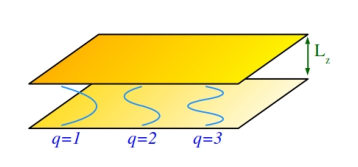
<figcaption class="paper-figure-caption"><b>Fig 1.</b> Fig. 1 Light confinement in a planar microcavity (top) results in a relativistic dispersion for the in-plane motion of photons (bottom left).</figcaption>
</figure>
<figure class="paper-figure-card">
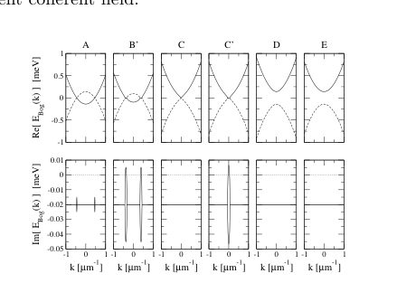
<figcaption class="paper-figure-caption"><b>Fig 2.</b> Fig. 2 Left panels: plot of the equation of state of the fluid of light, expressed as fluid density as a function of pump intensity for two different incident frequencies in respectively the optical limiter regime (top) and the bistable regime (bottom). The dashed line indicates the dynamically unstable regions. Right panel: Real part (top) and imaginary part (bottom) of the excitation frequencies for the nonequilibrium Bogoliubov modes corresponding to the points indicated as A, B’, C, C’, D, E in the left panel. Figure adapted from [24].</figcaption>
</figure>
<figure class="paper-figure-card">
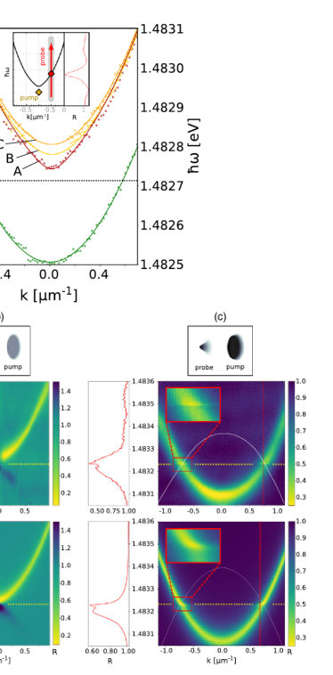
<figcaption class="paper-figure-caption"><b>Fig 3.</b> Fig. 3 (Upper panel) Optical bistability in a coherently pumped fluid of light. Left: photon density as a function of the pump intensity for an blue-detuned pump frequency. Red arrows indicate the path along the hysteresis cycle during the upwards and then downwards ramp of the pump intensity. Right: Bogoliubov dispersion for different values of the pump intensity giving a fluid density at working points A, B, and C along the bistability cycle. Points are experimental measurements and lines are theoretical fits. The black dashed line indicates the pump energy ℏωinc and the green line is the dispersion of non-interacting polaritons in the linear regime. (Lower panels) Experimental...</figcaption>
</figure>
<figure class="paper-figure-card">
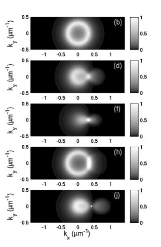
<figcaption class="paper-figure-caption"><b>Fig 4.</b> Fig. 4 Left panels: theoretical prediction for the dispersion of collective excitations in a coherently pumped fluid of light flowing in the rightward direction. Right panels: k-space intensity distribution of the Rayleigh scattered light by a weak defect at rest. The different rows correspond to different pumping configurations, as described in Figs.2 and 3: the three first rows (a-b,c-d,e-f) correspond to the turning point of the bistability loop for growing values of the density. The fourth row (g-h) is for a band-sticking regime, precursor of dynamical instability. The fifth row (i-j) is for a gapped dispersion. Figure adapted from [24].</figcaption>
</figure>
<figure class="paper-figure-card">
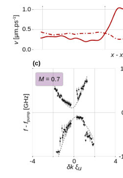
<figcaption class="paper-figure-caption"><b>Fig 5.</b> Fig. 5 Dispersion of the collective excitations at different spatial positions in a non-homogeneously flowing fluid. The top panel shows the spatial profiles of the speed of sound (dot-dashed) and of the speed of flow (solid). The crossing point of the two lines gives a black-hole-like sonic horizon. The bottom panels show the dispersion in the sub-sonic M = v/cs = 0.7 upstream (left) and super-sonic M = v/cs = 4 downstream (right) regions as it was experimentally measured using the pump-and- probe technique discussed in App.A.2. The wavevector δk on the horizontal axis of the lower panels corresponds to q in the text. Figure adapted from [34].</figcaption>
</figure>
</div>

<p><strong>Summary.</strong> This review surveys the physics of quantum fluids of light in optical cavities, focusing on how losses and pumping drive the system away from thermal equilibrium. The core contribution is characterizing the resulting collective excitations and their dispersion relations, which reveal unique superfluid properties compared to standard Bose gases. It establishes a theoretical framework for understanding non-equilibrium quantum matter in photonics.</p>
<p><strong>Why it may be interesting.</strong> This bridges the gap between traditional equilibrium quantum gas theory (like BECs) and modern open quantum systems, providing a framework to analyze non-equilibrium superfluidity in photonic platforms.</p>
<details>
<summary>Detailed structure</summary>
<p><strong>Main problem.</strong> To provide a comprehensive overview of the theoretical and experimental study of many-body physics in driven-dissipative quantum fluids of light.</p>
<p><strong>Main result.</strong> The collective excitations in these non-equilibrium systems exhibit a rich phenomenology, characterized by various dispersion relations (e.g., gapless, diffusive Goldstone) dictated by the interplay of pumping and losses.</p>
<p><strong>Method.</strong> The analysis adapts the concept of collective excitations, traditionally used for equilibrium Bose gases, to non-equilibrium systems using a generalized non-equilibrium Gross-Pitaevskii equation.</p>
<p><strong>Model / system.</strong> The system is a quantum fluid of photons confined in an optical cavity, exhibiting finite photon mass and Kerr nonlinearity. Crucially, the system is driven by external pumping and subject to radiative/non-radiative losses, preventing thermal equilibrium.</p>
<p><strong>Key observables.</strong> Collective excitations, dispersion relation $\omega(k)$, and superfluidity properties.</p>
<p><strong>Important parameters / regimes.</strong> Pumping configuration (coherent vs. incoherent), interaction strength ($g_{nl}$), and loss/pumping rates ($\gamma_{loss}, \eta$).</p>
<p><strong>Assumptions / limitations.</strong> The analysis often relies on the mean-field approximation and assumes planar cavity geometries for initial dispersion analysis.</p>
<p><strong>Figures summary.</strong> Figure 1 illustrates light confinement in a planar microcavity and the resulting relativistic dispersion relation for in-plane motion, distinguishing between rest mass and kinetic mass.</p>
<p><strong>Paper structure.</strong> The paper reviews the field by first establishing the physical model (driven-dissipative GPE), then systematically analyzing how different pumping configurations modify the expected excitation spectrum, and finally pointing toward future research areas like supersolids and Mott insulators.</p>
</details>
<details>
<summary>Abstract</summary>
<p>In this work we give an overview on a couple of decades of theoretical and experimental research on the many-body physics of driven-dissipative quantum fluids of light in optical cavities. These systems consist of a large number of photons enclosed in a cavity device where spatial confinement induces a finite photon mass and the Kerr optical nonlinearity of the cavity material mediates finite photon-photon interactions. Differently from standard Bose gases of material particles like liquid Helium or ultracold atomic gases, photons are inevitably subject to radiative and/or non-radiative losses, which must be compensated by some pumping mechanism. As a result, the properties of the steady state are not imposed by a thermal equilibrium condition, but are determined by a dynamical interplay of pumping and losses. Among the many collective phenomena that are observed in these systems, we focus here on the collective excitations around the steady state and we characterize the impact of the driven-dissipative nature of the gas on their properties, in particular on their dispersion relation. Different pumping configurations give very different behaviors: a specific discussion is provided for the most important configurations used in the experiments. Observable consequences of the various forms of the dispersion -gapped, gapless, sonic, band-sticking, diffusive Goldstone- are illustrated with a special eye towards their consequences on the superfluidity properties. We conclude the article with a presentation of a few research avenues that we personally find most exciting for the next years, namely the osbervable consequences of the concurrently superfluid and solid nature of supersolid states of light and the collective dynamics of quantum correlated states of strongly interacting photon gases in the presence of strong nonlinearities, in particular Mott insulator states.</p>
</details>
<p><sub><a href="#top">↑ back to top</a></sub></p>

<p><a id="paper-2609.39650"></a></p>
<h3 id="phase-sensitive-avalanche-quantum-sensing-of-sub-shot-noise-fields"><a href="http://arxiv.org/abs/2609.39650v1">Phase-sensitive avalanche quantum sensing of sub-shot-noise fields</a></h3>
<p><strong>Authors:</strong> Nikolai D. Klimkin, Misha Ivanov<br>
<strong>Type:</strong> theory · <strong>Category:</strong> other · <strong>PDF:</strong> <a href="https://arxiv.org/pdf/2609.39650v1">https://arxiv.org/pdf/2609.39650v1</a><br>
<strong>Analysis basis:</strong> full PDF text, analyzed in chunks
<strong>Topic relevance:</strong> 🔥 <code>quantum measurements</code> <strong>4/5</strong> · <code>Tavis-Cummings &amp; cavity-many-emitter</code> <strong>3/5</strong> · <code>analog quantum simulation</code> <strong>3/5</strong> · <code>Keldysh / 2PI / non-Gaussian methods</code> <strong>2/5</strong> · <code>driven-dissipative phase transition</code> <strong>2/5</strong> · <code>methods for driven-dissipative</code> <strong>2/5</strong> · <code>Full counting statistics</code> <strong>1/5</strong> · <code>correlated / nonlocal dissipation</code> <strong>1/5</strong> · <code>interference shaping light</code> <strong>1/5</strong></p>
<div class="figure-strip-hint">↔ Scroll figures horizontally</div>
<div class="paper-figures-scroll">
<figure class="paper-figure-card">
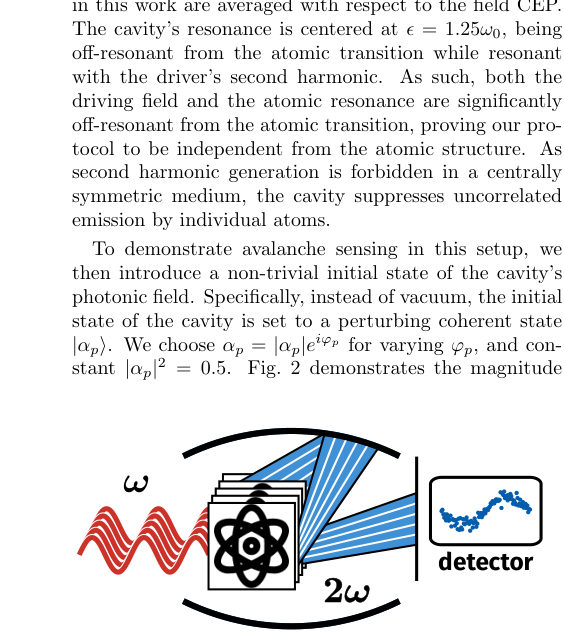
<figcaption class="paper-figure-caption"><b>Fig 1.</b> FIG. 1. (color online) Basic design of our setup. The classical radiation (red), resonant in our case with the atomic tran- sitions, drives ultrafast currents in all atoms independently. This causes them to emit frequency-converted photons (blue) entangled with the emitters. The electromagnetic radiation confinement in a medium causes these photons (blue beams with white lines) to linger, allowing them to either be ab- sorbed by the same or another atom, or leave the confining medium. In the latter case, they can be observed by a classi- cal detector positioned outside (right).</figcaption>
</figure>
<figure class="paper-figure-card">
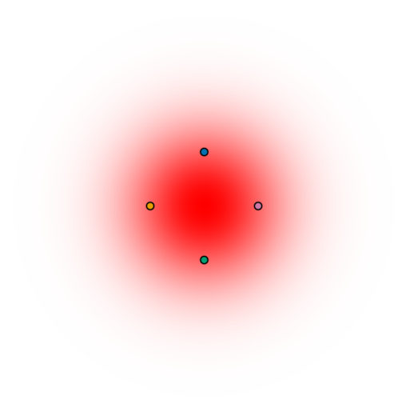
<figcaption class="paper-figure-caption"><b>Fig 2.</b> FIG. 2. Vacuum Husimi function overlaid with the coherent displacement amplitudes αp used in this work as perturba- tions.</figcaption>
</figure>
<figure class="paper-figure-card">
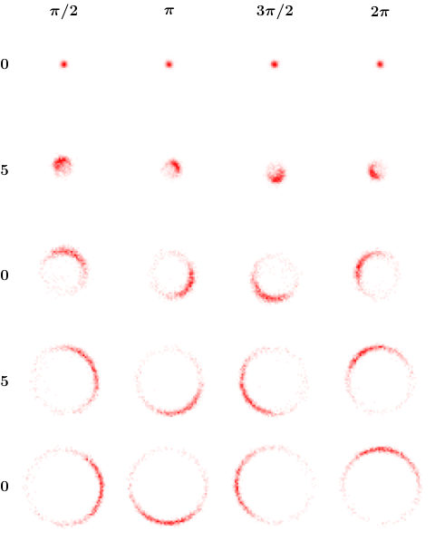
<figcaption class="paper-figure-caption"><b>Fig 3.</b> FIG. 3. Evolution of the 3rd cavity mode’s Husimi function depending on the perturbation’s phase (left to right) and evo- lution time (top to bottom). For comparison, the rightmost column shows the time-evolving Husimi function for the un- perturbed system.</figcaption>
</figure>
<figure class="paper-figure-card">
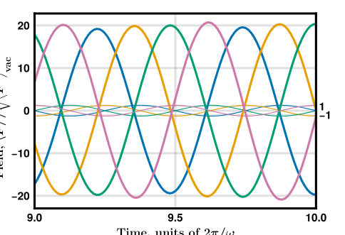
<figcaption class="paper-figure-caption"><b>Fig 4.</b> FIG. 4. Time-dependent output field shapes plotted for vary- ing perturbing field phase. The phases plotted are: π/2 (blue), π (yellow), 3π/2 (green), 2π (magenta). The thin lines indicate the initially introduced fluctuation.</figcaption>
</figure>
</div>

<p><strong>Summary.</strong> This paper proposes using atomic ensembles in photonic cavities as quantum avalanche detectors to sense light fields below the standard quantum shot noise limit. By tuning the cavity resonance, the system achieves a massive, tunable amplification of weak light fluctuations. Crucially, this mechanism preserves the phase information of the original weak signal, offering an improvement over existing quantum sensing protocols.</p>
<p><strong>Why it may be interesting.</strong> This work directly addresses quantum measurement limitations by proposing a novel, high-gain, phase-sensitive detection mechanism using cavity QED systems, which is highly relevant to open quantum systems and quantum optics.</p>
<details>
<summary>Detailed structure</summary>
<p><strong>Main problem.</strong> To develop a quantum sensing technique that detects sub-shot-noise fluctuations in light fields by leveraging atomic ensembles trapped in photonic cavities.</p>
<p><strong>Main result.</strong> The atomic cloud acts as a quantum avalanche detector, amplifying initial sub-shot-noise fluctuations by two orders of magnitude while preserving the phase of the weak input light.</p>
<p><strong>Method.</strong> The study employs the non-perturbative Hierarchy of Pure States (HOPS) method to model the complex, continuously driven quantum dynamics.</p>
<p><strong>Model / system.</strong> The system consists of atomic clouds coupled to photonic cavities, described by Hamiltonians involving dipole operators and cavity field operators. The process is designed to utilize second-harmonic emission triggered by vacuum fluctuations.</p>
<p><strong>Key observables.</strong> The evolution of the Husimi function $Q(\alpha)$ and the time-dependent average output field $\langle \hat{F} 
angle$ are key diagnostics.</p>
<p><strong>Important parameters / regimes.</strong> The cavity tuning to the second harmonic ($2\omega$) is crucial, and the sensitivity is measured relative to the quantum shot noise limit.</p>
<p><strong>Assumptions / limitations.</strong> The approach is non-perturbative, and the simulation relies on the HOPS method due to the continuously driven nature of the system.</p>
<p><strong>Figures summary.</strong> Figures illustrate the basic setup, the evolution of the Husimi function under perturbation, and the time evolution of the output field amplitude.</p>
<p><strong>Paper structure.</strong> The paper builds the theoretical framework by defining the Hamiltonian, applying the HOPS method to model the non-Markovian dynamics, and then demonstrating the amplification and phase preservation through numerical simulation of the output observables.</p>
</details>
<details>
<summary>Abstract</summary>
<p>Avalanche-based detection of small perturbations is commonplace in precision measurement devices from Geiger counters to single-photon avalanche detectors. Here, we expand this principle to sensing of light waves below the quantum shot noise limit, demonstrating numerically how atomic clouds trapped in photonic cavities can exhibit non-perturbative sensitivity to changes in the cavity field when the cavity mode is tuned to a parity-prohibited transition. We find that, when pumped by a continuous-wave laser, the atomic cloud creates emissions which amplify the initially sub-shot-noise fluctuation by two orders of magnitude. Crucially, this amplification is broadly tunable with respect to frequency and independent of atomic energy structure. Even more strikingly, our amplification mechanism preserves the phase imparted on the atoms by the original ultra-weak light wave, marking a qualitative improvement over conventional protocols. Our finding has implications for both quantum state characterization and detection of weak classical signals.</p>
</details>
<p><sub><a href="#top">↑ back to top</a></sub></p>

<p><a id="paper-2609.40009"></a></p>
<h3 id="room-temperature-polariton-supersolids"><a href="http://arxiv.org/abs/2609.40009v1">Room-temperature polariton supersolids</a></h3>
<p><strong>Authors:</strong> Yuanhao Gong, Jingwen Ma, Shuang Zhang, Xiaobo Yin, Xiang Zhang<br>
<strong>Type:</strong> both · <strong>Category:</strong> quantum gases · <strong>PDF:</strong> <a href="https://arxiv.org/pdf/2609.40009v1">https://arxiv.org/pdf/2609.40009v1</a><br>
<strong>Analysis basis:</strong> full PDF text, analyzed in chunks
<strong>Topic relevance:</strong> 🔥 <code>analog quantum simulation</code> <strong>4/5</strong> · 🔥 <code>driven-dissipative phase transition</code> <strong>4/5</strong> · <code>non-equilibrium universality</code> <strong>3/5</strong> · <code>quantum optics experiment</code> <strong>3/5</strong> · <code>methods for driven-dissipative</code> <strong>2/5</strong> · <code>Keldysh / 2PI / non-Gaussian methods</code> <strong>1/5</strong> · <code>correlated / nonlocal dissipation</code> <strong>1/5</strong> · <code>interference shaping light</code> <strong>1/5</strong></p>
<div class="figure-strip-hint">↔ Scroll figures horizontally</div>
<div class="paper-figures-scroll">
<figure class="paper-figure-card">
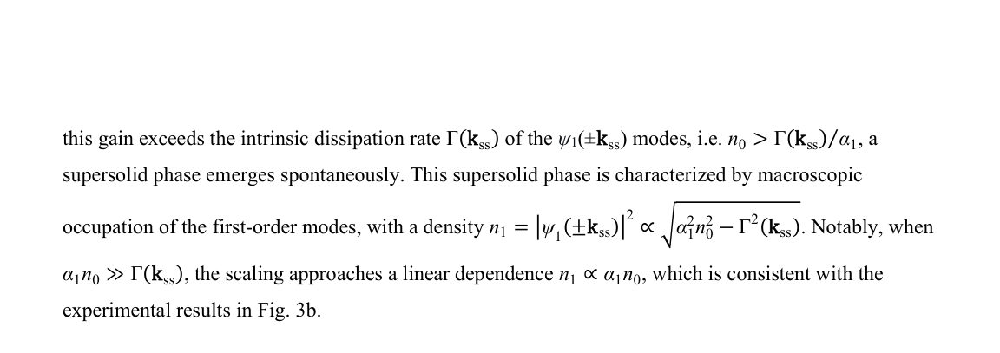
<figcaption class="paper-figure-caption"><b>Fig 1.</b> Figure 3c presents the energy spectrum measured at the finite wavevector ±kss for different</figcaption>
</figure>
<figure class="paper-figure-card">
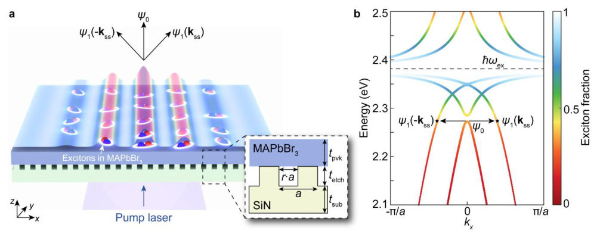
<figcaption class="paper-figure-caption"><b>Fig 2.</b> Fig. 1 | Room-temperature supersolid in an exciton–polariton photonic-crystal device. a, Schematic</figcaption>
</figure>
<figure class="paper-figure-card">
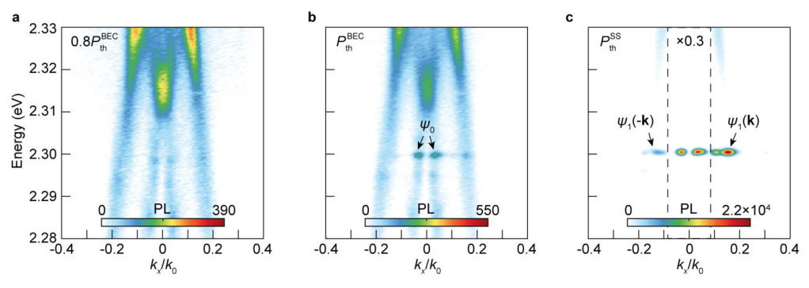
<figcaption class="paper-figure-caption"><b>Fig 3.</b> Fig. 2 | Characterization of the supersolid phase in momentum space. a–c, Angle-resolved</figcaption>
</figure>
<figure class="paper-figure-card">
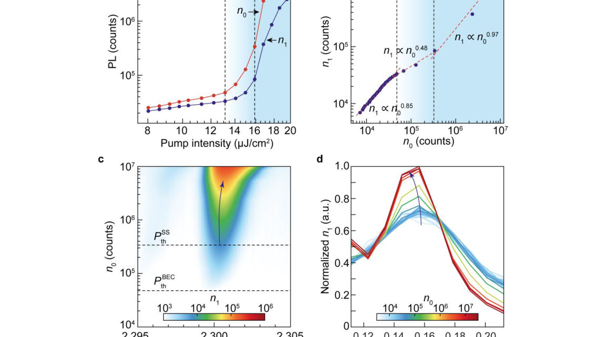
<figcaption class="paper-figure-caption"><b>Fig 4.</b> Fig. 3 | Spontaneous emergence of non-rigid supersolid. a, Measured emission intensity of the ψ0 and</figcaption>
</figure>
<figure class="paper-figure-card">
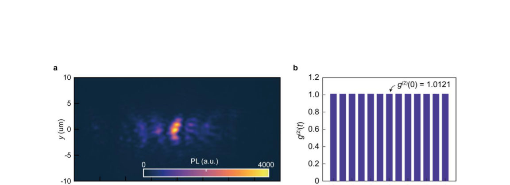
<figcaption class="paper-figure-caption"><b>Fig 5.</b> Fig. 4 | Characterization of long-range orders of supersolids. a, Real-space image of the supersolid</figcaption>
</figure>
</div>

<p><strong>Summary.</strong> This paper reports the groundbreaking observation of a supersolid phase in polariton condensates operating at room temperature. By engineering a hybrid perovskite/photonic-crystal device, the authors created a platform where the condensate spontaneously develops both crystalline order and superfluid coherence. This achievement opens a new, accessible avenue for studying fundamental quantum many-body physics.</p>
<p><strong>Why it may be interesting.</strong> This work bridges the gap between cryogenic quantum phenomena and ambient conditions using solid-state photonics, offering a highly accessible platform for studying complex quantum hydrodynamics and phase transitions relevant to AMO physics.</p>
<details>
<summary>Detailed structure</summary>
<p><strong>Main problem.</strong> The primary goal is to establish and characterize a room-temperature platform for observing the supersolid phase, which combines crystalline order with superfluid flow.</p>
<p><strong>Main result.</strong> The authors successfully demonstrated a room-temperature polariton supersolid in a hybrid perovskite/photonic-crystal device, evidenced by simultaneous crystalline order and quantum coherence.</p>
<p><strong>Method.</strong> The study combines theoretical modeling of nonlinear dynamics with advanced experimental techniques like angle-resolved optical microscopy and momentum-space quantum coincidence measurements.</p>
<p><strong>Model / system.</strong> The system uses a polariton condensate formed in a photonic-crystal waveguide integrated with a room-temperature perovskite semiconductor. The physics is modeled by an effective Hamiltonian describing parametric squeezing between counter-propagating modes.</p>
<p><strong>Key observables.</strong> Simultaneous observation of crystalline order (DLRO) and quantum coherence (ODLRO); distinct spectral peaks at finite momenta ($\pm k_{	ext{ss}}$); nonlinear density scaling laws ($n_1 \propto n_0^{0.97}$).</p>
<p><strong>Important parameters / regimes.</strong> Room temperature operation; critical condensation density ($P_{	ext{th}}^{	ext{SS}}$); the ratio of parametric gain to dissipation rate.</p>
<p><strong>Assumptions / limitations.</strong> The condensate ($\psi_0$) is treated as a classical coherent field; the perovskite film's exciton properties are assumed stable at ambient conditions.</p>
<p><strong>Figures summary.</strong> Figures illustrate the device schematic, the spectral evolution across two distinct pump thresholds (BEC and SS), and quantitative plots showing the density scaling relationship between the supersolid and condensate components.</p>
<p><strong>Paper structure.</strong> The paper progresses from introducing the challenge of room-temperature supersolidity to detailing the hybrid device construction, presenting theoretical models for the nonlinear dynamics, and finally reporting experimental measurements confirming the supersolid signatures.</p>
</details>
<details>
<summary>Abstract</summary>
<p>Exploring exotic quantum phases of matter at room temperature represents a frontier challenge in modern physics. The supersolid phase, uniquely merging crystalline order with frictionless superfluid flow, stands among the most intriguing macroscopic quantum phenomena. However, all previous demonstrations of supersolidity, whether in ultracold atomic gases or III-V semiconductor-based polariton systems, have been strictly confined to cryogenic temperatures. Here, we report the observation of room-temperature supersolids in photonic-crystal polariton condensates. By integrating a room-temperature-stable perovskite semiconductor with a dispersion-engineered photonic-crystal waveguide, we create a polariton condensate with multi-mode dispersion landscapes and pronounced parametric nonlinearities. Above a critical condensation density, the interacting condensates spontaneously break continuous translational symmetry, creating a non-rigid supersolid phase that simultaneously exhibits emergent crystalline order and global quantum coherence. This work establishes a room-temperature platform for investigating quantum hydrodynamics and developing coherent quantum simulation devices.</p>
</details>
<p><sub><a href="#top">↑ back to top</a></sub></p>

<p><a id="paper-2609.39084"></a></p>
<h3 id="engineered-dissipation-for-thermal-state-tracking-across-quantum-criticality"><a href="http://arxiv.org/abs/2609.39084v1">Engineered Dissipation for Thermal-State Tracking Across Quantum Criticality</a></h3>
<p><strong>Authors:</strong> Saikat Mistry, Dibyajyoti Sahu, Suhas Gangadharaiah<br>
<strong>Type:</strong> theory · <strong>Category:</strong> statistical mechanics · <strong>PDF:</strong> <a href="https://arxiv.org/pdf/2609.39084v1">https://arxiv.org/pdf/2609.39084v1</a><br>
<strong>Analysis basis:</strong> full PDF text, analyzed in chunks
<strong>Topic relevance:</strong> 🔥 <code>driven-dissipative phase transition</code> <strong>4/5</strong> · <code>methods for driven-dissipative</code> <strong>3/5</strong> · <code>non-equilibrium universality</code> <strong>3/5</strong> · <code>Keldysh / 2PI / non-Gaussian methods</code> <strong>2/5</strong> · <code>quantum measurements</code> <strong>2/5</strong> · <code>analog quantum simulation</code> <strong>1/5</strong> · <code>correlated / nonlocal dissipation</code> <strong>1/5</strong> · <code>scars &amp; prethermalization</code> <strong>1/5</strong></p>
<div class="figure-strip-hint">↔ Scroll figures horizontally</div>
<div class="paper-figures-scroll">
<figure class="paper-figure-card">
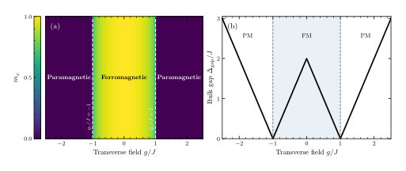
<figcaption class="paper-figure-caption"><b>Fig 1.</b> Figure 1. Equilibrium phase structure of the transverse- field Ising model. (a) Spontaneous magnetization mx, dis- tinguishing the ferromagnetic (|g/J| &lt; 1) and paramagnetic (|g/J| &gt; 1) phases. (b) Bulk quasiparticle excitation gap, which closes at the quantum critical points g/J = ±1.</figcaption>
</figure>
<figure class="paper-figure-card">
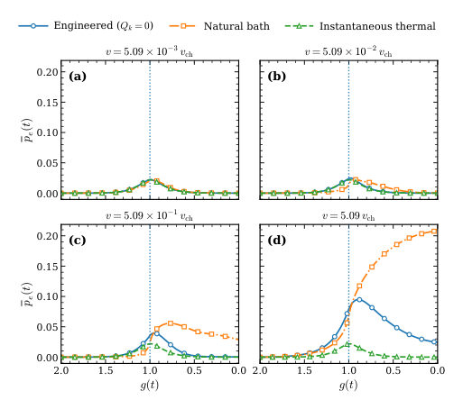
<figcaption class="paper-figure-caption"><b>Fig 2.</b> Figure 2. Mode-averaged excited-state population for four re- duced driving rates expressed through the ratio v/vch. The engineered (Qk = 0), natural-bath, and instantaneous ther- mal populations are shown; the dotted vertical line marks the quantum critical point gc = 1.</figcaption>
</figure>
<figure class="paper-figure-card">
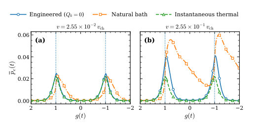
<figcaption class="paper-figure-caption"><b>Fig 3.</b> Figure 3. Mode-averaged excited-state population during a ramp across both quantum critical points, gc = ±1. The two panels correspond to v/vch = 2.55 × 10−2 and 2.55 × 10−1, respectively, where vch is evaluated for the 2 →−2 protocol. The engineered (Qk = 0), natural-bath, and instantaneous thermal populations are shown.</figcaption>
</figure>
<figure class="paper-figure-card">
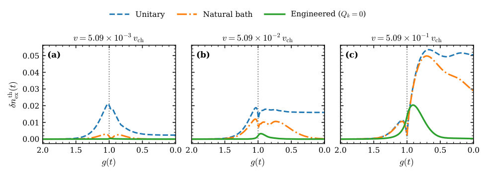
<figcaption class="paper-figure-caption"><b>Fig 4.</b> Figure 4. Thermal excitation deviation δnth ex(t) for unitary, natural-bath, and engineered (Qk = 0) dynamics during the primary ramp gi = 2 →gf = 0. Panels (a)–(c) correspond respectively to v/vch = 5.09 × 10−3, 5.09 × 10−2, and 5.09 × 10−1. These representative rates lie below the characteristic finite-size driving scale vch and illustrate the increasing departure from the instantaneous thermal target as the driving rate is increased. The dotted vertical line marks the quantum critical point gc = 1.</figcaption>
</figure>
<figure class="paper-figure-card">
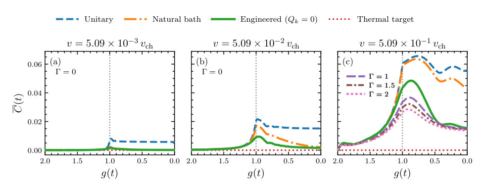
<figcaption class="paper-figure-caption"><b>Fig 5.</b> Figure 5. Mode-averaged coherence C(t) for the same three driving rates considered in Fig. 4, comparing unitary, natural- bath, and engineered dynamics. The minimal-current protocol Qk = 0 is shown together with finite common-current choices Qk = Γλ0,kλ1,k for Γ = 1, 1.5, and 2 (in units of J/ℏ) in panel (c). Increasing Γ enhances coherence damping while leaving the prescribed net population current unchanged. The instantaneous thermal target has zero coherence in the instantaneous energy basis. The dotted vertical line marks the quantum critical point gc = 1.</figcaption>
</figure>
</div>

<p><strong>Summary.</strong> This paper introduces a method to actively control a quantum system's evolution toward a target thermal state while crossing a quantum critical point. By engineering the dissipative environment using controlled population currents, the authors demonstrate superior suppression of thermal excitations and coherence compared to natural dynamics. This opens a new pathway for controlling thermal preparation in driven many-body systems.</p>
<p><strong>Why it may be interesting.</strong> This work provides a concrete, controllable mechanism to manage non-equilibrium dynamics in quantum critical systems, which is highly relevant for understanding thermalization and quantum phase transitions in open quantum systems.</p>
<details>
<summary>Detailed structure</summary>
<p><strong>Main problem.</strong> The paper addresses the challenge of actively steering a quantum system toward a prescribed thermal trajectory during nonadiabatic, finite-time driving across a quantum critical point.</p>
<p><strong>Main result.</strong> Engineered dissipation can strongly suppress thermal excitation deviations and provide superior control over coherence damping compared to unitary evolution or natural thermal baths.</p>
<p><strong>Method.</strong> A Markovian dissipative framework is developed by constructing engineered population currents with non-negative transition rates to enforce the required time evolution of the instantaneous Gibbs state.</p>
<p><strong>Model / system.</strong> The analysis is applied to the transverse-field Ising model (TFIM), which is treated by decomposing it into independent two-level sectors, allowing the general dissipative formalism to be applied mode-by-mode.</p>
<p><strong>Key observables.</strong> Thermal excitation deviation ($\delta n_{th}^{ex}$) and mode-averaged coherence ($C(t)$) are used to quantify the success of the engineered control.</p>
<p><strong>Important parameters / regimes.</strong> The ratio of driving velocity to characteristic velocity ($v/v_{ch}$), and the common current $Q_k(t)$ which controls coherence damping.</p>
<p><strong>Assumptions / limitations.</strong> The approach relies on the weak-coupling Born-Markov approximation and assumes the ability to engineer the required time-dependent transition rates.</p>
<p><strong>Figures summary.</strong> Figures compare the scaling of thermal excitation deviation ($\delta n_{th}^{ex}$) for Unitary, Natural bath, and Engineered dynamics, showing the engineered protocol yields a steeper quadratic scaling ($\propto (v/v_{ch})^2$).</p>
<p><strong>Paper structure.</strong> The paper first establishes the need for active thermal state tracking, develops the general Markovian framework using engineered currents, applies it to the TFIM, and finally compares the resulting scaling laws for excitation and coherence against standard dynamics.</p>
</details>
<details>
<summary>Abstract</summary>
<p>Engineering dissipation has emerged as a powerful strategy for controlling quantum many-body dynamics, complementing purely coherent control for state preparation. However, finite-time driving across a quantum critical point generates nonadiabatic excitations and coherences, and existing dissipation-engineering approaches have largely characterized how a fixed environment modifies critical dynamics rather than actively steering a system toward a prescribed thermal trajectory. Here we develop a Markovian dissipative framework for finite-time thermal-state tracking based on engineered population currents with non-negative transition rates, and apply it to the transverse-field Ising model driven across its quantum critical point. Compared with unitary dynamics and a natural thermal bath, the engineered dynamics strongly suppresses thermal excitation deviations and provides additional control over coherence damping through a free common current $Q_k$, while exhibiting a substantially steeper residual scaling, $δn_{\mathrm{ex}}^{\mathrm{th}}\sim(v/v_{\mathrm{ch}})^2$, than the Kibble--Zurek behavior recovered for unitary evolution. These results point toward engineered dissipation as a route for controlling thermal-state preparation in driven quantum critical systems.</p>
</details>
<p><sub><a href="#top">↑ back to top</a></sub></p>

<p><a id="paper-2609.38770"></a></p>
<h3 id="rayleigh-wood-threshold-controls-nonlinear-photon-correlations-in-atomic-arrays"><a href="http://arxiv.org/abs/2609.38770v1">Rayleigh-Wood Threshold Controls Nonlinear Photon Correlations in Atomic Arrays</a></h3>
<p><strong>Authors:</strong> Zai-Cheng Xiao, Li-Ping Yang<br>
<strong>Type:</strong> theory · <strong>Category:</strong> other · <strong>PDF:</strong> <a href="https://arxiv.org/pdf/2609.38770v1">https://arxiv.org/pdf/2609.38770v1</a><br>
<strong>Analysis basis:</strong> full PDF text, analyzed in chunks
<strong>Topic relevance:</strong> 🔥 <code>interference shaping light</code> <strong>4/5</strong> · <code>driven-dissipative phase transition</code> <strong>3/5</strong> · <code>Keldysh / 2PI / non-Gaussian methods</code> <strong>2/5</strong> · <code>analog quantum simulation</code> <strong>2/5</strong> · <code>methods for driven-dissipative</code> <strong>2/5</strong> · <code>correlated / nonlocal dissipation</code> <strong>1/5</strong> · <code>non-equilibrium universality</code> <strong>1/5</strong> · <code>quantum measurements</code> <strong>1/5</strong></p>
<div class="figure-strip-hint">↔ Scroll figures horizontally</div>
<div class="paper-figures-scroll">
<figure class="paper-figure-card">
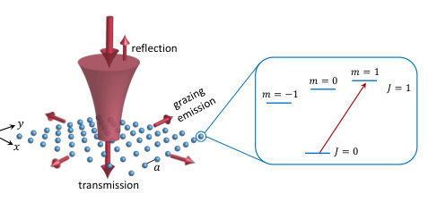
<figcaption class="paper-figure-caption"><b>Fig 1.</b> FIG. 1. Schematic of light scattering from a two-dimensional atomic array. A finite-waist beam is normally incident on a square array with lattice constant a. A magnetic field lifts the degeneracy of the J = 1 manifold, while the chosen polarization and paraxial excitation iso- late an effective two-level transition within the J = 0 →J = 1 manifold. As a approaches the Rayleigh–Wood threshold, the first non-specular diffraction orders enter the light cone and redirect pho- tons into near-grazing modes with kz ≃0.</figcaption>
</figure>
<figure class="paper-figure-card">
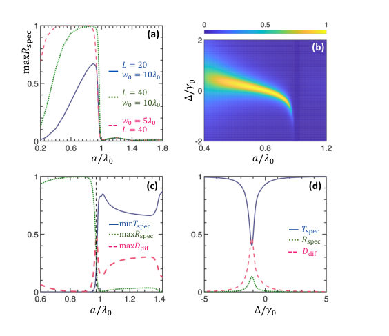
<figcaption class="paper-figure-caption"><b>Fig 2.</b> FIG. 2. Linear optical response of a finite two-dimensional square atomic array. (a) Maximum specular reflection rate maxRspec as a function of the lattice constant a for different array sizes L and Gaus- sian beam waists w0. (b) Specular reflection spectrum Rspec versus a and detuning ∆= ωin −ω0. (c) Maximum specular reflection Rspec, minimum specular transmission Tspec, and diffuse scattering prob- ability Ddif = 1 −Rspec −Tspec across the transition. The diffuse scattering exhibits a pronounced peak at a = 0.98λ0, marked by the vertical dashed line. (d) Frequency dependence of Tspec, Rspec, and Ddif at a = 0.98λ0, showing that resonant scattering is predominantly redistributed into...</figcaption>
</figure>
<figure class="paper-figure-card">
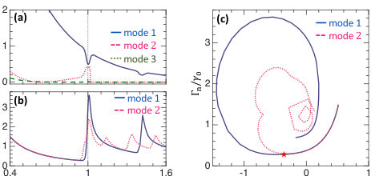
<figcaption class="paper-figure-caption"><b>Fig 3.</b> FIG. 3. Collective-mode origin of the collapse of specular reflection. (a) Residues |Bn| of the three collective eigenmodes that couple most strongly to the incident Gaussian beam. (b) Radiative linewidths Γn of the two leading modes. (c) Pole trajectories of the two leading modes in the complex spectrum, plotted as Γn/γ0 versus (ReEn − ω0)/γ0. The red star marks the lattice spacing a = 0.93λ0, where maxRspec begins to drop. The parameters are L = 40 and w0 = 10λ0.</figcaption>
</figure>
<figure class="paper-figure-card">
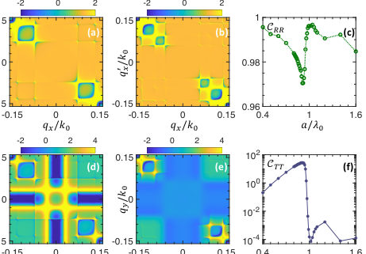
<figcaption class="paper-figure-caption"><b>Fig 4.</b> FIG. 4. Momentum-space photon correlations across the Rayleigh– Wood transition. The first two columns show log10 g(2) αα(qx, 0; q′ x, 0) for reflected photons (α = R, top row) and transmitted photons (α = T, bottom row) measured in a 2f configuration, at a = 0.8λ0 and 1.1λ0, respectively. The third column shows the integrated non- linear contrasts CR and CT as functions of the lattice spacing. For each lattice spacing, the detuning is chosen to maximize the spec- ular reflection, following the same protocol as in Fig. 2 (a). The parameters are L = 20 and w0 = 10λ0, and the collection aperture is restricted to |q| &lt; 0.16k0.</figcaption>
</figure>
<figure class="paper-figure-card">
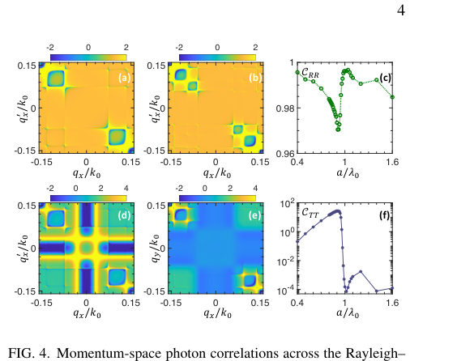
<figcaption class="paper-figure-caption"><b>Fig 5.</b> Figure 4 shows that the Rayleigh–Wood threshold con- trols both the momentum-space structure and the integrated strength of photon correlations. The first two columns dis- play log10 g(2) RR (top row) and log10 g(2) TT (bottom row) along g(2) αα(qx, 0; q′ x, 0) for a = 0.8λ0 and 1.1λ0, respectively. Be- low threshold, the reflected correlations are concentrated in opposite-momentum sectors. In transmission, momentum- space Fano interference between the incident and collectively scattered fields produces single-photon intensity zeros, as shown in the Supplemental Material [32]. The associated denominator enhancement generates a pronounced cross-like pattern, while extended antibunched bands...</figcaption>
</figure>
</div>

<p><strong>Summary.</strong> The authors demonstrate that the Rayleigh-Wood anomaly in 2D atomic arrays provides a powerful control mechanism for quantum nonlinear optics. By tuning the lattice spacing across the diffraction threshold, they show that the system can selectively suppress nonlinear correlations in transmitted light while preserving them in reflected light. This establishes diffraction thresholds as a general control principle for quantum nonlinear interactions in atomic structures.</p>
<p><strong>Why it may be interesting.</strong> This work provides a concrete, experimentally tunable mechanism (diffraction threshold) to switch quantum nonlinear optical responses, which is highly relevant for designing quantum light sources and nonlinear quantum interfaces.</p>
<details>
<summary>Detailed structure</summary>
<p><strong>Main problem.</strong> The paper investigates how the Rayleigh-Wood anomaly can be used to precisely control both linear and nonlinear photon scattering processes within single-layer atomic arrays.</p>
<p><strong>Main result.</strong> The diffraction threshold acts as a sharp control knob, selectively collapsing the relative nonlinear two-photon correlation in transmitted light while leaving the reflected correlation largely unaffected.</p>
<p><strong>Method.</strong> The analysis uses input-output formalism and quantum regression theorem to calculate linear and two-photon scattering amplitudes, decomposing the nonlinear response into connected and factorized parts.</p>
<p><strong>Model / system.</strong> The system is a two-dimensional atomic array modeled as a quantum metasurface, whose collective modes are governed by an effective Hamiltonian incorporating atom-photon interactions. The physics is analyzed across the transition point where the lattice spacing crosses the diffraction threshold.</p>
<p><strong>Key observables.</strong> Specular reflection rate ($R_{	ext{spec}}$), transmission rate ($T_{	ext{spec}}$), two-photon scattering amplitude ($A^{(2)}$), and the integrated nonlinear contrast ($C_{\alpha\alpha}$).</p>
<p><strong>Important parameters / regimes.</strong> Lattice spacing ($a$) relative to the resonant wavelength ($\lambda_0$), and the diffraction threshold ($a/\lambda_0 \approx 1$).</p>
<p><strong>Assumptions / limitations.</strong> The effective two-level description of the atoms is assumed to be valid, and the incident pulses are treated as quasi-monochromatic paraxial pulses.</p>
<p><strong>Figures summary.</strong> Figures illustrate the abrupt drop of specular reflection and the development of diffuse scattering at the threshold, alongside plots showing the collapse of the connected two-photon contribution in transmission versus reflection across the anomaly.</p>
<p><strong>Paper structure.</strong> The paper systematically analyzes the linear response (specular vs. diffuse scattering) first, establishing the physical mechanism of the Rayleigh-Wood anomaly, and then extends this analysis to the nonlinear regime by examining the connected two-photon correlations.</p>
</details>
<details>
<summary>Abstract</summary>
<p>Two-dimensional atomic arrays provide versatile free-space quantum optical interfaces by coupling photons to collective lattice modes. Here we show that the Rayleigh--Wood anomaly provides a sharp control mechanism for both linear and nonlinear photon scattering from a single atomic layer. As the lattice spacing crosses the diffraction threshold, newly opened radiative channels rapidly broaden the dominant collective modes, converting specular reflection into diffuse off-axis scattering. In transmission, momentum-space Fano interference between the incident and collectively scattered fields produces single-photon intensity zeros that strongly reshape the momentum-space correlation pattern. An integrated nonlinear contrast reveals a pronounced channel asymmetry: upon opening the Rayleigh channels, the connected two-photon contribution drops by several orders of magnitude relative to the factorized background in transmission, while remaining close to unity in reflection. These results establish radiative diffraction thresholds as a control principle for quantum nonlinear optics in single-layer atomic arrays.</p>
</details>
<p><sub><a href="#top">↑ back to top</a></sub></p>

<p><a id="paper-2609.40214"></a></p>
<h3 id="quantum-markov-state-models-for-metastable-dynamics"><a href="http://arxiv.org/abs/2609.40214v1">Quantum Markov State Models for Metastable Dynamics</a></h3>
<p><strong>Authors:</strong> Hao-En Li, Lin Lin, Michael Ragone<br>
<strong>Type:</strong> theory · <strong>Category:</strong> statistical mechanics · <strong>PDF:</strong> <a href="https://arxiv.org/pdf/2609.40214v1">https://arxiv.org/pdf/2609.40214v1</a><br>
<strong>Analysis basis:</strong> full PDF text, analyzed in chunks
<strong>Topic relevance:</strong> 🔥 <code>methods for driven-dissipative</code> <strong>4/5</strong> · <code>driven-dissipative phase transition</code> <strong>3/5</strong> · <code>non-equilibrium universality</code> <strong>2/5</strong> · <code>scars &amp; prethermalization</code> <strong>2/5</strong> · <code>Keldysh / 2PI / non-Gaussian methods</code> <strong>1/5</strong> · <code>analog quantum simulation</code> <strong>1/5</strong> · <code>correlated / nonlocal dissipation</code> <strong>1/5</strong> · <code>quantum measurements</code> <strong>1/5</strong></p>
<div class="figure-strip-hint">↔ Scroll figures horizontally</div>
<div class="paper-figures-scroll">
<figure class="paper-figure-card">
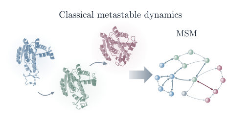
<figcaption class="paper-figure-caption"><b>Fig 1.</b> Figure 1. Classical and quantum Markov state models. Left: metastability in molecular dynamics is represented by transitions among classical states. Right: a driven dissipative spin chain can be reduced to a metastable logical qubit. The Bloch-sphere fan depicts dephasing.</figcaption>
</figure>
<figure class="paper-figure-card">
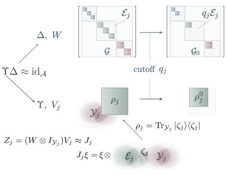
<figcaption class="paper-figure-caption"><b>Fig 2.</b> Figure 3. A schematic illustration of the surgery on the decoding and encoding dilations. A cutoff by {qj} selects the repaired decoding space G0 and nearby environmental states ρ0 j. Rotation ensures G0 ⊆Ran W0, and purification yields the repaired product isometries J0 j ξ = ξ ⊗ζ0 j . The nested range inclusions then allow the pullback that defines V 0 j , matching the two repaired dilations and yielding Υ0∆0 = idA.</figcaption>
</figure>
<figure class="paper-figure-card">
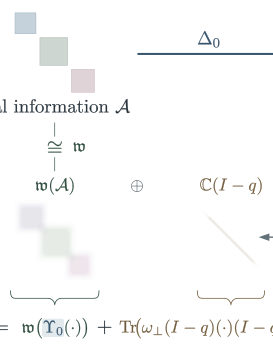
<figcaption class="paper-figure-caption"><b>Fig 3.</b> Figure 4. A schematic illustration of the ambient completion in the metastable seminorm, read clockwise from (a) to (d). The projection q identifies the physical subspace that corresponds to the cutoff dilation space G0 ⊂G. The decomposition determined by q gives ∆0 = w + r. Replacing the latter by a scalar component yields the conditional expectation Em onto the ambient subalgebra w(A) ⊕C(I −q).</figcaption>
</figure>
<figure class="paper-figure-card">

<figcaption class="paper-figure-caption"><b>Fig 4.</b> Figure 5. Boundary dissipation selects classical or quantum metastable information. Both open chains have odd n, weak Xj drive on j ∈{1, 2, 4, . . . , n −1}, and Lindbladian jumps XjXj+1 and ZjZj+1 on every bond. Top: adding the boundary dissipator Z1 gives switching between the parity phases ρ± = (I ± Qx)/2n, where Qx = Z⊗n. Bottom: without this extra jump, the dynamics reduces to a logical qubit; Qz = X⊗n is conserved while Qx, Qy dephase.</figcaption>
</figure>
<figure class="paper-figure-card">

<figcaption class="paper-figure-caption"><b>Fig 5.</b> Figure 6. {|z(z −1)| &lt; 1/4} has two components containing 0 and 1 respectively.</figcaption>
</figure>
</div>

<p><strong>Summary.</strong> This paper introduces Quantum Markov State Models (QMSMs) to model the long-time dynamics of open quantum systems exhibiting metastability. It achieves this by constructing an effective, reduced quantum process that approximates the true evolution channel with rigorously derived, optimal error bounds. This methodology is vital for analyzing complex quantum systems where only a few slow degrees of freedom govern the long-term behavior.</p>
<p><strong>Why it may be interesting.</strong> This work provides a rigorous, quantitative framework for coarse-graining complex quantum dynamics, which is crucial for modeling realistic open quantum systems in condensed matter and quantum optics.</p>
<details>
<summary>Detailed structure</summary>
<p><strong>Main problem.</strong> The paper addresses the challenge of accurately describing the long-time, metastable dynamics of open quantum systems where initial rapid relaxation leaves only a few slow degrees of freedom.</p>
<p><strong>Main result.</strong> It constructs Quantum Markov State Models (QMSMs) that provide an optimal, controlled approximation of the true evolution channel, answering Kitaev's exact-rounding question for these systems.</p>
<p><strong>Method.</strong> The core method involves assuming the evolution channel is almost idempotent ($\eta = \|C^2 - C\|_{\diamond} \ll 1$) and constructing explicit compression and reconstruction channels to define the reduced dynamics.</p>
<p><strong>Model / system.</strong> The framework is applied to open quantum systems, exemplified by a weakly driven dissipative spin chain, which exhibits metastable behavior characterized by slow spectral modes.</p>
<p><strong>Key observables.</strong> The diamond norm ($\|\cdot\|_{\diamond}$) and the defect $\eta = \|C^2 - C\|_{\diamond}$ are key diagnostics for the approximation error.</p>
<p><strong>Important parameters / regimes.</strong> The smallness of the defect $\eta$, and the assumption that the slow degrees of freedom are bounded independently of the total system size.</p>
<p><strong>Assumptions / limitations.</strong> The evolution channel $C$ must be almost idempotent, and the slow spectral subspace must have a bounded dimension for the construction to hold.</p>
<p><strong>Figures summary.</strong> Figure 2 schematically illustrates the spectral separation of the metastable evolution channel $C$, separating fast and slow eigenmodes around the unit eigenvalue.</p>
<p><strong>Paper structure.</strong> The paper develops the QMSM theory by relating the full channel $C$ to an idempotent approximation, deriving explicit error bounds ($O(\eta^{1/3})$ and $O(\eta^{1/2})$), and later explores dimensional obstructions to these bounds.</p>
</details>
<details>
<summary>Abstract</summary>
<p>Open quantum systems can rapidly lose most microscopic information, leaving only a few degrees of freedom to govern their long-time dynamics. Classical Markov state models (MSMs) describe such metastable dynamics as transitions between a few representative phases and are a well-established tool in condensed matter and chemical physics. However, phase labels alone cannot capture quantum coherence that may persist between metastable states. Even when the slow modes are known, their spectral projection need not produce valid quantum states. We construct quantum Markov state models (QMSMs) that describe the surviving information and its evolution on a small physical state space containing classical sectors and quantum matrix blocks. We assume that the evolution channel $\mathcal C$ changes little when applied a second time, with sufficiently small defect $η=\|\mathcal C^2-\mathcal C\|_\diamond$, and that the number of slow degrees of freedom is bounded independently of the full system size. Under these assumptions, we construct compression and reconstruction channels whose composition recovers every reduced state exactly, while the reverse composition gives an exactly idempotent channel approximating $\mathcal C$, answering Kitaev's exact-rounding question \cite{Kitaev2025}. Our constructions give an optimal diamond-norm bound of $\mathcal{O}(η^{1/3})$ on all input states, as well as an improved bound of $\mathcal{O}(η^{1/2})$ on metastable states prepared by $\mathcal C$, with constants depending only on the slow dimension. The reduced transition channel can be iterated to predict the microscopic dynamics with controlled error. We illustrate the QMSM through a weakly driven dissipative spin chain supporting either a metastable logical qubit or long-lived classical phases.</p>
</details>
<p><sub><a href="#top">↑ back to top</a></sub></p>

<p><a id="paper-2609.38790"></a></p>
<h3 id="synchronous-monte-carlo-method-and-its-application-to-a-mean-field-spin-glass-model"><a href="http://arxiv.org/abs/2609.38790v1">Synchronous Monte Carlo method and its application to a mean-field spin glass model</a></h3>
<p><strong>Authors:</strong> Yoshiyuki Kabashima<br>
<strong>Type:</strong> theory · <strong>Category:</strong> disordered systems and neural networks · <strong>PDF:</strong> <a href="https://arxiv.org/pdf/2609.38790v1">https://arxiv.org/pdf/2609.38790v1</a><br>
<strong>Analysis basis:</strong> full PDF text, analyzed in chunks
<strong>Topic relevance:</strong> 🔥 <code>methods for driven-dissipative</code> <strong>4/5</strong> · <code>non-equilibrium universality</code> <strong>3/5</strong> · <code>Keldysh / 2PI / non-Gaussian methods</code> <strong>2/5</strong> · <code>driven-dissipative phase transition</code> <strong>2/5</strong> · <code>scars &amp; prethermalization</code> <strong>2/5</strong> · <code>analog quantum simulation</code> <strong>1/5</strong> · <code>quantum measurements</code> <strong>1/5</strong></p>
<div class="figure-strip-hint">↔ Scroll figures horizontally</div>
<div class="paper-figures-scroll">
<figure class="paper-figure-card">

<figcaption class="paper-figure-caption"><b>Fig 1.</b> FIG. 1. (a) Energy per spin e versus temperature T. Circles: SyncMC for N = 4096, annealed from high T (error bars are smaller than the symbols). Solid line: e(T) = −RJ(β)/2, the equilibrium energy for T &gt; TK; dotted line: its continuation below TK. Vertical dashed lines mark TK and Td. Inset: N = 16; SyncMC with replica exchange (squares) versus exact enumeration (line). (b) Wall-clock time per sweep (N spin updates) versus N: sequential heat-bath updates on one CPU thread, and SyncMC on a GPU for a single chain and per chain when M = 64 chains run together (conditions in SM Sec. S1).</figcaption>
</figure>
<figure class="paper-figure-card">

<figcaption class="paper-figure-caption"><b>Fig 2.</b> FIG. 2. Two-time correlation C(tw + τ, tw) after a quench from a random configuration, for tw = 8, 32, 128, and 512 (light to dark). Symbols: SyncMC for N = 16384, aver- aged over 4 samples of O with 16 independent chains each (64 chains in total); the standard errors are smaller than the symbols. Lines: DMFT, averaged over 4 independent runs with 219 sampled trajectories each; the shaded band (mostly hidden by the lines) shows the spread over the runs. (a) T = 0.3 &gt; Td; (b) T = 0.1 &lt; Td.</figcaption>
</figure>
<figure class="paper-figure-card">

<figcaption class="paper-figure-caption"><b>Fig 3.</b> FIG. 3. Fluctuation-dissipation plot: Tχ(t, tw) versus C(t, tw) at fixed tw; symbols (SyncMC), lines (DMFT), and colors as in Fig. 2. Dashed line: the FDT, Eq. (11). (a) T = 0.3. (b) T = 0.1, shown for C ≥0.95; the dash- dotted line is a fit of the generalized FDT (13) to the SyncMC data for tw = 512, which gives qEA = 0.988 and x = 0.49. The marginally stable 1RSB solution gives qEA = 0.981 and x = 0.679.</figcaption>
</figure>
</div>

<p><strong>Summary.</strong> This work introduces a parallelizable Monte Carlo method to simulate mean-field spin glasses, allowing for efficient study of dynamics on modern hardware. By combining this simulation with Dynamical Mean-Field Theory, the authors demonstrate that the system exhibits aging below a critical temperature, leading to a violation of the standard Fluctuation-Dissipation Theorem in favor of a generalized form.</p>
<p><strong>Why it may be interesting.</strong> The rigorous study of aging and the violation of FDT in spin glasses provides deep insights into non-equilibrium dynamics, which is relevant for understanding relaxation processes in complex quantum many-body systems.</p>
<details>
<summary>Detailed structure</summary>
<p><strong>Main problem.</strong> The paper develops and applies a novel, parallelizable Monte Carlo method to study the non-equilibrium dynamics and aging behavior of mean-field spin glass models.</p>
<p><strong>Main result.</strong> The analysis confirms that below the dynamical transition temperature, the system violates the Fluctuation-Dissipation Theorem (FDT), following a generalized two-slope form consistent with theoretical predictions.</p>
<p><strong>Method.</strong> The study combines a novel Synchronous Monte Carlo (SyncMC) simulation technique with Dynamical Mean-Field Theory (DMFT) to analyze time-dependent correlation and response functions.</p>
<p><strong>Model / system.</strong> The system studied is the mean-field spin glass, specifically applied to the Random Orthogonal Model (ROM) with a Hamiltonian involving pairwise interactions. The dynamics are analyzed using time-dependent correlation and response functions.</p>
<p><strong>Key observables.</strong> Correlation function $C(t, t')$, Response function $R(t, t')$, and the generalized FDT relationship $\chi(t, t_w)$ vs $C(t, t_w)$.</p>
<p><strong>Important parameters / regimes.</strong> Dynamical transition temperature ($T_d$), the non-ergodicity parameter ($q_{EA}$), and the fluctuation-dissipation ratio ($x$).</p>
<p><strong>Assumptions / limitations.</strong> The DMFT solution relies on analyzing dynamics across different time scale regimes, and the generalized FDT is derived by combining results from different theoretical limits.</p>
<p><strong>Figures summary.</strong> Figures show the energy per spin vs. T, comparing SyncMC to equilibrium values, and plot the response vs. correlation functions, demonstrating the transition from standard FDT to the generalized two-slope form below $T_d$.</p>
<p><strong>Paper structure.</strong> The paper introduces the SyncMC method, applies it to the mean-field spin glass, and then uses DMFT to analyze the dynamics. It progresses from stationary regimes ($T>T_d$) to the aging regime ($T<T_d$), deriving the generalized FDT and relating it to the 1RSB solution.</p>
</details>
<details>
<summary>Abstract</summary>
<p>Standard Markov chain Monte Carlo methods update variables one at a time to satisfy detailed balance, which prevents them from fully exploiting massively parallel hardware such as graphics processing units (GPUs). We study a Monte Carlo method for systems with pairwise interactions in which all variables are updated simultaneously, made possible by auxiliary Gaussian fields introduced through the Gaussian integral identity. The method satisfies detailed balance and is therefore guaranteed to converge to the canonical distribution. For mean-field spin glasses, its dynamics can be analyzed exactly by dynamical mean-field theory (DMFT). Applying the method and the DMFT to the random orthogonal model, which exhibits a random first-order transition, we find that the fluctuation-dissipation theorem (FDT) is clearly violated below the dynamical transition temperature, and that the relation between response and correlation takes the two-slope form of a generalized FDT, with simulations and theory in quantitative agreement.</p>
</details>
<p><sub><a href="#top">↑ back to top</a></sub></p>

<p><a id="paper-2609.40174"></a></p>
<h3 id="dissipation-accelerates-quantum-and-classical-simulation-of-open-system-dynamics"><a href="http://arxiv.org/abs/2609.40174v1">Dissipation accelerates quantum and classical simulation of open-system dynamics</a></h3>
<p><strong>Authors:</strong> Armando Angrisani, Ricard Puig, Yanting Teng, Zoë Holmes<br>
<strong>Type:</strong> theory · <strong>Category:</strong> statistical mechanics · <strong>PDF:</strong> <a href="https://arxiv.org/pdf/2609.40174v1">https://arxiv.org/pdf/2609.40174v1</a><br>
<strong>Analysis basis:</strong> full PDF text, analyzed in chunks
<strong>Topic relevance:</strong> 🔥 <code>methods for driven-dissipative</code> <strong>4/5</strong> · <code>driven-dissipative phase transition</code> <strong>3/5</strong> · <code>non-equilibrium universality</code> <strong>2/5</strong> · <code>Keldysh / 2PI / non-Gaussian methods</code> <strong>1/5</strong> · <code>analog quantum simulation</code> <strong>1/5</strong> · <code>correlated / nonlocal dissipation</code> <strong>1/5</strong> · <code>quantum measurements</code> <strong>1/5</strong></p>
<div class="figure-strip-hint">↔ Scroll figures horizontally</div>
<div class="paper-figures-scroll">
<figure class="paper-figure-card">

<figcaption class="paper-figure-caption"><b>Fig 1.</b> FIG. 1. Relative resource growth for all-to-all Heisenberg dynamics. At final evolution time T = 0.3 and normalized Hilbert–Schmidt error target ε = 0.01, dashed lines with open circles show circuit depth D/D0 := D(n, γ)/D(3, γ), and solid lines with filled downward triangles show PP propagation time tPP/tPP,0 := tPP(n, γ)/tPP(3, γ). Colors identify the de- polarization rate γ; each resource is normalized to its own three-qubit value at the same noise rate. Depth uses the nearest-integer interpolated Trotter-step estimate from un- truncated simulations. PP time is the fastest measured time among sampled step counts and cutoffs meeting the total-error target. Lines guide the eye; the ratios...</figcaption>
</figure>
<figure class="paper-figure-card">

<figcaption class="paper-figure-caption"><b>Fig 2.</b> FIG. 2. Magnetization mx(t) on a 7×7 lattice. Colors indicate γ = 0.05, 0.5, 2, 4 for the Hamiltonian in Eq. (51). Dashed, solid, and dash-dotted curves use coefficient cutoffs τ = 3 × 10−5, 10−5, and 3 × 10−6. Coarser cutoffs are drawn more faintly for visualization. Crosses mark early endpoints at the memory limit.</figcaption>
</figure>
</div>

<p><strong>Summary.</strong> This paper develops advanced theoretical bounds for simulating open quantum systems by analyzing the role of environmental dissipation. It demonstrates that for local observables, dissipation can simplify the simulation complexity, leading to quantum circuit depths and classical runtimes that are independent of system size $n$. This work establishes quantifiable error guarantees for both quantum and classical simulation methods.</p>
<p><strong>Why it may be interesting.</strong> This work provides concrete, resource-aware guarantees for simulating complex, realistic open quantum dynamics, which is crucial for understanding quantum computation in noisy environments.</p>
<details>
<summary>Detailed structure</summary>
<p><strong>Main problem.</strong> The paper addresses the challenge of efficiently simulating open quantum systems, where environmental coupling dictates dynamics, by analyzing how dissipation affects simulation complexity.</p>
<p><strong>Main result.</strong> They show that for local observables, the required quantum circuit depth scales independently of system size $n$ for fixed dissipation, and they derive polynomial classical simulation bounds.</p>
<p><strong>Method.</strong> The core method involves exploiting the exponential suppression of high-weight Pauli components due to Pauli noise, allowing for size-independent Trotter steps and enabling rigorous error bounding via Richardson extrapolation.</p>
<p><strong>Model / system.</strong> The system is an $n$-qubit open quantum system governed by a Lindblad master equation, $L = \sum L_a$, which includes both coherent (Hamiltonian) and local, Pauli-diagonal dissipative parts.</p>
<p><strong>Key observables.</strong> Heisenberg-evolved observables, expectation values $   ext{Tr}[
ho O(t)]$, and Out-of-Time-Order Correlators (OTOCs).</p>
<p><strong>Important parameters / regimes.</strong> Dissipation rate ($\gamma$), system size ($n$), simulation time ($t$), and desired accuracy ($\epsilon$).</p>
<p><strong>Assumptions / limitations.</strong> The Lindbladian is assumed to decompose into local blocks, and the noise is assumed to be Pauli-diagonal, damping non-identity Pauli modes.</p>
<p><strong>Figures summary.</strong> A figure compares the relative growth of estimated ideal circuit depth versus measured Pauli-propagation time when increasing system size, showing a separation greatest at weaker noise.</p>
<p><strong>Paper structure.</strong> The paper develops theoretical bounds for quantum and classical simulation of open dynamics, focusing on the role of dissipation in compressing the required computational resources for estimating local observables.</p>
</details>
<details>
<summary>Abstract</summary>
<p>Simulating open quantum systems reveals how environmental coupling shapes relaxation, excitation transport, and the dynamics of quantum correlations. On quantum hardware, dissipative channels add operations and might seem to increase cost. However, we show that a broad class of Pauli noise, including depolarization, can ease quantum and classical simulation by exponentially suppressing high-weight components of Heisenberg-evolved observables. For bounded-degree Lindblad dynamics, this permits system-size-independent Trotter steps when estimating local observables. Combining this compression with Richardson extrapolation, we provide classical and quantum error bounds with respect to the 2-norm of the propagated observable. These give high-probability expectation-value guarantees for random input states or random Hamiltonians acting on a fixed state and control (out-of-time-order) correlators. Concretely, we show that expectation values of local observables at time $t$ can be estimated to accuracy $\varepsilon$ using circuits of maximum depth $O\!\left(\left[1+\left(t/γ\right)^{3/2}\right]\log^2(1/\varepsilon)\right)$, independent of the system size $n$. Classically, we show that sparse Pauli propagation runs in time polynomial in $n$, $t$ and $1/\varepsilon$ for every fixed $γ>0$, with polynomial degree $O(1/γ)$ in the weak dissipation limit. The gap between our quantum and classical upper bounds leaves room for a substantial polynomial quantum advantage as dissipation weakens, an observation further supported by our numerical results.</p>
</details>
<p><sub><a href="#top">↑ back to top</a></sub></p>

<p><a id="paper-2609.38687"></a></p>
<h3 id="polarisation-resolved-identification-of-spontaneous-four-wave-mixing-processes-in-a-multimode-fused-tapered-fibre-coupler"><a href="http://arxiv.org/abs/2609.38687v1">Polarisation-resolved identification of spontaneous four-wave mixing processes in a multimode fused tapered fibre coupler</a></h3>
<p><strong>Authors:</strong> Jefferson Flórez, Chams Baker, Benjamin J. Sussman, Xiaoyi Bao, Jeff S. Lundeen, Lambert Giner<br>
<strong>Type:</strong> both · <strong>Category:</strong> quantum information and computing · <strong>PDF:</strong> <a href="https://arxiv.org/pdf/2609.38687v1">https://arxiv.org/pdf/2609.38687v1</a><br>
<strong>Analysis basis:</strong> full PDF text, analyzed in chunks
<strong>Topic relevance:</strong> 🔥 <code>quantum optics experiment</code> <strong>4/5</strong> · <code>QC/QI experiment</code> <strong>3/5</strong> · <code>interference shaping light</code> <strong>3/5</strong> · <code>quantum measurements</code> <strong>2/5</strong> · <code>analog quantum simulation</code> <strong>1/5</strong></p>
<div class="figure-strip-hint">↔ Scroll figures horizontally</div>
<div class="paper-figures-scroll">
<figure class="paper-figure-card">

<figcaption class="paper-figure-caption"><b>Fig 1.</b> Figure 1. SEM images of the microcoupler: (a) cross section away from the waist, used to read the axis ratio (major axis 4.857 µm, minor axis 3.651 µm, ratio ≈1.33); (b) top view at the waist, used to read the absolute scale (major axis 1.161 µm). The bright region is the broken fibre section (destructive imaging); the visible marks are fracture artefacts, not the shape of the guide.</figcaption>
</figure>
<figure class="paper-figure-card">

<figcaption class="paper-figure-caption"><b>Fig 2.</b> Figure 2. Experimental setup. The pump is prepared by a quarter- and a half-wave plate (QWP, HWP) before the microcoupler; immediately after the device a notch filter rejects the pump, and a dichroic mirror then splits the output into a signal and an idler analysis arm. Two detection configurations are used: (i) a spectrometer with an EMCCD camera for spectral identification, and (ii) a pair of avalanche photodiodes (APDs) in coincidence, one arm filtered by the spectrometer used as a monochromator, for the g(2)(0) and pump-dependence measurements; adding a polarisation analyser (QWP, HWP, PBS) on the filtered arm realises the tomography.</figcaption>
</figure>
<figure class="paper-figure-card">

<figcaption class="paper-figure-caption"><b>Fig 3.</b> Figure 4. Transverse field profiles of the six guided modes of the microcoupler at λ = 800 nm: four well-defined modes (the two fundamentals LPx 01, LPy 01 and the two LPx-even 11 , LPy-odd 11 ) and two hybrid modes (LPy-even 11 , LPx-odd 11 ). The superscript x or y denotes the polarisation and even/odd the spatial parity. Modes are shown in the same order as figure 5, by decreasing effective index.</figcaption>
</figure>
<figure class="paper-figure-card">

<figcaption class="paper-figure-caption"><b>Fig 4.</b> Figure 5. Effective indices nm of the six guided modes versus wavelength over a 300 to 1800 nm sweep, from the COMSOL eigenmode simulations: (a) LPx 01, (b) LPy 01, (c) LPy-even 11 , (d) LPx-even 11 , (e) LPx-odd 11 , (f) LPy-odd 11 . These indices set the propagation constants βm = nm ω/c used to solve the phase-matching condition.</figcaption>
</figure>
<figure class="paper-figure-card">

<figcaption class="paper-figure-caption"><b>Fig 5.</b> Figure 6. Phase-matching curves (∆k = 0) in the (fp, δ) plane for the four candidate combinations: (a) 11, (b) 32, (c) 51 and (d) 21. Solid blue marks the signal branch and dashed red the idler branch; the dotted diamond is the energy-conservation boundary. The vertical grey line is the experimental pump (λp = 800 nm, i.e. fp = 0.375 × 1015 Hz), and its intersections with the branches give the phase-matched signal and idler wavelengths reported in table 3. For each panel, the offset |δ| and the corresponding wavelengths (λs, λi) are: (a) 11, |δ| = 0.088 × 1015 Hz, (647.6, 1046.3) nm; (b) 32, |δ| = 0.101 × 1015 Hz, (630.2, 1095.2) nm; (c) 51, |δ| = 0.082 × 1015 Hz, (656.5, 1023.8) nm; (d)...</figcaption>
</figure>
</div>

<p><strong>Summary.</strong> This paper details the characterization of spontaneous four-wave mixing (SFWM) in a multimode fused tapered fibre coupler. By combining polarization tomography with phase-matching theory, the authors uniquely identified distinct SFWM processes and demonstrated the potential to generate polarization or composite spatial-polarization entanglement. This establishes a robust methodology for analyzing complex quantum sources in integrated waveguides.</p>
<p><strong>Why it may be interesting.</strong> This work provides a highly practical, experimentally validated protocol for characterizing nonlinear quantum sources in integrated photonics, directly addressing the complex issue of mode and process identification crucial for scalable quantum network components.</p>
<details>
<summary>Detailed structure</summary>
<p><strong>Main problem.</strong> The primary challenge is to unambiguously identify and characterize spontaneous four-wave mixing (SFWM) processes occurring in a complex, multimode integrated waveguide where spectral information alone is insufficient.</p>
<p><strong>Main result.</strong> The authors successfully distinguished two specific SFWM processes (660/1021 nm and 648/1048 nm) using polarization measurements, and theoretically predicted the generation of polarization or composite spatial-polarization entanglement by tuning the pump wavelength.</p>
<p><strong>Method.</strong> The methodology combines rigorous phase-matching calculations, selection rules, and two independent polarization measurements (pump polarization dependence and polarization tomography) to resolve process ambiguities.</p>
<p><strong>Model / system.</strong> The system is a fused tapered-fibre microcoupler, which acts as a multimode waveguide supporting six guided modes. The analysis models the generation of photon pairs via SFWM within this elliptical cross-section.</p>
<p><strong>Key observables.</strong> Coincidence rates dependence on pump polarization angle ($\phi$), reconstructed polarization states ($
ho$), and the type/fidelity of generated entanglement (e.g., Bell state).</p>
<p><strong>Important parameters / regimes.</strong> Pump wavelength ($\sim 800$ nm), spectral separation of pairs (e.g., 648/1048 nm), and the degree of mode coupling (intermodal vs. intramodal).</p>
<p><strong>Assumptions / limitations.</strong> The identification strategy assumes that combining selection rules, phase-matching, and two independent polarization measurements is sufficient to resolve process ambiguities. Future entanglement generation is limited by fabrication ellipticity and spectral overlap.</p>
<p><strong>Figures summary.</strong> Figures illustrate the SEM cross-section of the coupler, the experimental setup for spectroscopy and pump-dependence measurements, and theoretical plots showing phase matching crossings corresponding to different entanglement regimes.</p>
<p><strong>Paper structure.</strong> The paper progresses from establishing the need for integrated sources, characterizing the multimode platform, developing a multi-faceted identification strategy using polarization measurements, attributing specific processes to specific pump polarizations, and finally extending the analysis to theoretically predict entanglement generation.</p>
</details>
<details>
<summary>Abstract</summary>
<p>Integrated quantum photonics benefits from photon-pair sources that generate photons directly in waveguides, where they can be efficiently collected, routed, and manipulated. Here, we investigate spontaneous four-wave mixing (SFWM) in a fused tapered-fibre microcoupler formed from two single-mode fibres, and report four contributions. First, we observe SFWM photon pairs in this multimode device: its elliptical central region supports three spatial mode profiles, each with two polarisations, giving six guided modes, and pumping it near 800 nm yields two photon pairs at 648/1048 nm and 660/1021 nm. Second, because several allowed SFWM processes produce similar wavelengths and wavelength alone does not identify their origin, we distinguish the processes by combining phase-matching calculations and selection rules with two independent polarisation measurements: the dependence of the coincidence rate on pump polarisation and polarisation tomography of the generated photons. Third, within the present geometrical model, we find that the 660/1021 nm pair is generated by co-polarised pump photons in a process occurring entirely within a single higher-order mode, whereas the 648/1048 nm pair is generated by orthogonally polarised pump photons in an intermodal process coupling a fundamental and a higher-order mode; the signal photons from the two processes have similar output polarisations, while the idler photons are nearly orthogonal. Fourth, extending the analysis beyond the measured operating point, we theoretically identify pairs of simultaneous SFWM processes driven by a common pump that could generate either polarisation entanglement or composite spatial-polarisation entanglement, depending on the pump wavelength. More generally, this work provides a practical strategy for identifying intermodal SFWM processes in multimode waveguides when spectral information alone is insufficient.</p>
</details>
<p><sub><a href="#top">↑ back to top</a></sub></p>

<p><a id="paper-2609.38631"></a></p>
<h3 id="passive-realism-in-the-presence-of-open-system-dynamics"><a href="http://arxiv.org/abs/2609.38631v1">Passive realism in the presence of open system dynamics</a></h3>
<p><strong>Authors:</strong> James Fullwood, Boyu Yang, Weixiang Ye<br>
<strong>Type:</strong> theory · <strong>Category:</strong> quantum information and computing · <strong>PDF:</strong> <a href="https://arxiv.org/pdf/2609.38631v1">https://arxiv.org/pdf/2609.38631v1</a><br>
<strong>Analysis basis:</strong> full PDF text, analyzed in chunks
<strong>Topic relevance:</strong> 🔥 <code>quantum measurements</code> <strong>4/5</strong> · <code>correlated / nonlocal dissipation</code> <strong>2/5</strong> · <code>driven-dissipative phase transition</code> <strong>2/5</strong> · <code>Keldysh / 2PI / non-Gaussian methods</code> <strong>1/5</strong> · <code>methods for driven-dissipative</code> <strong>1/5</strong> · <code>non-equilibrium universality</code> <strong>1/5</strong></p>
<div class="figure-strip-hint">↔ Scroll figures horizontally</div>
<div class="paper-figures-scroll">
<figure class="paper-figure-card">

<figcaption class="paper-figure-caption"><b>Fig 1.</b> FIG. 1. A two-time sequential measurement scenario of an open quantum system.</figcaption>
</figure>
</div>

<p><strong>Summary.</strong> This paper introduces 'passive realism' and shows that its necessary condition, No-Signalling in Time (NSIT), is generally violated even when considering open-system dynamics. The authors prove that such violations persist unless the initial state is maximally mixed or the environment interaction is trivial (discard-and-prepare). This constrains the physical assumptions we can make about measurement in realistic, noisy quantum environments.</p>
<p><strong>Why it may be interesting.</strong> This work provides a rigorous theoretical framework for understanding how environmental coupling affects fundamental assumptions about measurement, which is crucial for quantum causal inference and understanding decoherence effects on quantum information protocols.</p>
<details>
<summary>Detailed structure</summary>
<p><strong>Main problem.</strong> The paper investigates whether open-system dynamics can restore the No-Signalling in Time (NSIT) condition, which is necessary for 'passive realism,' when closed quantum systems inherently violate it due to measurement back action.</p>
<p><strong>Main result.</strong> The authors prove that NSIT is universally satisfied only if the initial state is maximally mixed or the environmental channel is a discard-and-prepare channel, implying passive realism is generally violated by system-environment interactions.</p>
<p><strong>Method.</strong> The analysis uses the two-time sequential measurement scenario, deriving the joint probability distribution and applying the NSIT condition to constrain the nature of the quantum channel governing the evolution.</p>
<p><strong>Model / system.</strong> The model involves a quantum system undergoing a projective measurement, followed by evolution governed by an arbitrary quantum channel E, and concluding with a second projective measurement.</p>
<p><strong>Key observables.</strong> The No-Signalling in Time (NSIT) condition, the nonselective Lüders disturbance, and the existence of binary projective measurements violating NSIT.</p>
<p><strong>Important parameters / regimes.</strong> The initial state $
ho_A$, the quantum channel $E$ (e.g., depolarizing or dephasing), and the measurement operators $\{P_i\}$ and $\{Q_j\}$.</p>
<p><strong>Assumptions / limitations.</strong> The analysis is restricted to the two-time sequential measurement scenario, and it models the environment interaction via an arbitrary quantum channel E.</p>
<p><strong>Figures summary.</strong> Figure 1 illustrates the two-time sequential measurement scenario, and the text references the Lüders-von Neumann projection postulate.</p>
<p><strong>Paper structure.</strong> The paper establishes the connection between passive realism and NSIT, derives the necessary and sufficient conditions for NSIT satisfaction (Theorem 1), and then provides constructive procedures and explicit examples (depolarizing/dephasing channels) demonstrating violations when the conditions are not met.</p>
</details>
<details>
<summary>Abstract</summary>
<p>We introduce the terminology \emph{passive realism} to encapsulate the scale-independent assumption that a physical system's pre-existing properties can be passively observed without altering its subsequent dynamics. A necessary condition for passive realism is provided by the no-signalling in time (NSIT) condition, which states that a measurement outcome is independent of whether or not a prior measurement was performed. While closed quantum systems generically violate NSIT due to measurement back action, we investigate whether open-system dynamics can dissipate this disturbance to the environment and restore NSIT. By modeling the time evolution between sequential measurements as an arbitrary quantum channel, we show that such environmental masking is possible only in two special cases. Specifically, we show that if the initial state of a two-time sequential measurement scenario is not maximally mixed, and if the channel governing the dynamics between measurements is not a discard-and-prepare channel, then there necessarily exist binary projective measurements violating NSIT, hence violating passive realism. By providing a constructive procedure for determining these violating measurements---applied here to depolarizing and dephasing channels---we demonstrate that, outside these two cases, system-environment interactions cannot erase the statistical footprint of a quantum measurement for all measurement choices.</p>
</details>
<p><sub><a href="#top">↑ back to top</a></sub></p>

<p><a id="paper-2609.38848"></a></p>
<h3 id="quantum-quenches-of-scar-states-in-the-affleck-kennedy-lieb-tasaki-model-via-clifford-augmented-tensor-network-simulation"><a href="http://arxiv.org/abs/2609.38848v1">Quantum quenches of scar states in the Affleck-Kennedy-Lieb-Tasaki model via Clifford augmented tensor network simulation</a></h3>
<p><strong>Authors:</strong> Azar C. Nakhl, Ben Harper, Muhammad Usman, Thomas Quella<br>
<strong>Type:</strong> theory · <strong>Category:</strong> numerical methods · <strong>PDF:</strong> <a href="https://arxiv.org/pdf/2609.38848v1">https://arxiv.org/pdf/2609.38848v1</a><br>
<strong>Analysis basis:</strong> full PDF text, analyzed in chunks
<strong>Topic relevance:</strong> 🔥 <code>scars &amp; prethermalization</code> <strong>4/5</strong> · <code>methods for driven-dissipative</code> <strong>3/5</strong> · <code>non-equilibrium universality</code> <strong>3/5</strong> · <code>analog quantum simulation</code> <strong>1/5</strong></p>
<div class="figure-strip-hint">↔ Scroll figures horizontally</div>
<div class="paper-figures-scroll">
<figure class="paper-figure-card">

<figcaption class="paper-figure-caption"><b>Fig 1.</b> FIG. 1. An overview of the Clifford augmented simulation method: (a) One prepares the scar states by repeated appli- cation of Q† defined in Equation (10) after which one may disentangle the scar state |Si⟩using the Clifford operator C†</figcaption>
</figure>
<figure class="paper-figure-card">

<figcaption class="paper-figure-caption"><b>Fig 2.</b> FIG. 2. (a) A plot of the approximate NsEE (in red) and SRE (in blue) and (b) a plot of the Entanglement entropy (in red) and SRE (in blue) for the AKLT ground state and tower of scar states for N = 50 sites. The bimagnon number n labels each of the scar states, with the ground state given by n = 0. We find that SRE peaks first at about n = 9 with entangle- ment entropy peaking at the already established n = N/4 [33]. The approximate NsEE continues to grow until n = 15, indi- cating sub-optimal disentangling with GCAMPS. Note that the approximate NsEE serves as a measure of computational complexity and is distinct from the true NsEE which like SRE grows with increasing non-stabilizerness.</figcaption>
</figure>
<figure class="paper-figure-card">

<figcaption class="paper-figure-caption"><b>Fig 3.</b> FIG. 3. Plot of the string order Oz string(r) as per Equation (13) after a quench to the isotropic Heisenberg Hamiltonian start- ing from the ground state |S0⟩and first three scar states (|S2⟩, |S4⟩, |S6⟩) of the AKLT model with 50 sites. The time-step of the TDVP simulation was set to ∆t = 0.001J−1 and plotted at every t = 0.1J−1. The bond dimension of the MPS set to a maximum of χ = 512 with the disentangling performed once at the beginning of the time evolution. Note that the AKLT ground state has string order Oz string(r) ≈−4/9 for all string lengths r and that the isotropic Heisenberg Hamilto- nian has long range string order Oz string(N/2) ≈−0.374 [45]. Additionally, note that for...</figcaption>
</figure>
<figure class="paper-figure-card">

<figcaption class="paper-figure-caption"><b>Fig 4.</b> FIG. 4. A 1/N fit (dashed lines) for Oz string(N/2) for the |S2⟩, |S4⟩and |S6⟩scars taken at regular time intervals after quenching as described in Section IV B. After some time we find that the fit breaks down for the higher-energy scars as the string order decays to zero.</figcaption>
</figure>
<figure class="paper-figure-card">

<figcaption class="paper-figure-caption"><b>Fig 5.</b> FIG. 5. A plot of Oz string(N/2) in the long length limit as esti- mated from Figure 4 with the error bars showing one standard deviation in the fitted parameters. Note that the string order appears to decay to zero for higher-energy scar states after a short time, with the ground state and first scar state exhibit- ing comparatively slower decay over the same time interval.</figcaption>
</figure>
</div>

<p><strong>Summary.</strong> This work uses advanced Clifford augmented tensor network simulations to study quantum quenches in the AKLT model. The authors find that while the initial scar states are highly non-stabilizible, the string order decays after the quench, revealing sensitivity to symmetry changes. This demonstrates the utility of the Clifford augmented TDVP for analyzing topological properties in complex quantum systems.</p>
<p><strong>Why it may be interesting.</strong> The combination of advanced tensor network techniques (Clifford augmentation) with the study of topological order (string order) and non-stabilizerness provides a powerful, modern tool for analyzing quantum many-body dynamics.</p>
<details>
<summary>Detailed structure</summary>
<p><strong>Main problem.</strong> To investigate the stability and dynamics of scar states in the AKLT model following a quantum quench, while quantifying the underlying non-stabilizerness ('magic').</p>
<p><strong>Main result.</strong> The study observes a decay of string order after the quench, which is sensitive to symmetry-preserving changes, even when remaining within the same topological phase.</p>
<p><strong>Method.</strong> The research employs a Clifford augmented Time-Dependent Variational Principle (TDVP) algorithm implemented via tensor networks to simulate the time evolution of the quantum state.</p>
<p><strong>Model / system.</strong> The system is the spin-1 Affleck-Kennedy-Lieb-Tasaki (AKLT) model, which is studied through its ground and scar states. Dynamics are simulated by quenching the system to the anti-ferromagnetic Heisenberg Hamiltonian.</p>
<p><strong>Key observables.</strong> String order parameter, Stabilizer Rényi Entropy (SRE) quantifying non-stabilizerness, and the decay rate of string order.</p>
<p><strong>Important parameters / regimes.</strong> The quench process itself, the bimagnon number, and the bond dimension ($\chi$) used in the tensor network simulation.</p>
<p><strong>Assumptions / limitations.</strong> The simulation relies on the assumption that the Clifford augmented TDVP method accurately captures the dynamics, although long-time simulations require prohibitively large bond dimensions.</p>
<p><strong>Figures summary.</strong> Figures illustrate the Clifford augmented simulation procedure, including scar state preparation and the 2-site TDVP evolution steps.</p>
<p><strong>Paper structure.</strong> The paper first introduces the Clifford augmented simulation framework for probing non-stabilizerness (SRE) in the AKLT model. It then applies this method to study the string order dynamics following a quench from the AKLT Hamiltonian to the Heisenberg Hamiltonian.</p>
</details>
<details>
<summary>Abstract</summary>
<p>Clifford augmented methods have emerged as a powerful technique to simulate quantum circuits and many-body systems by exploiting the stabiliser structure found in said systems, whilst additionally enabling one to readily quantify the non-stabilizerness (i.e.\ magic) present. In this work, we utilise a qudit Clifford augmented simulation method to probe the presence of magic in the Affleck-Kennedy-Lieb-Tasaki (AKLT) model, finding that its ground state and scar states are highly magical as quantified by their Stabiliser Rényi Entropy (SRE). Nevertheless, owing to its low entanglement structure, these states are still readily expressible as a Clifford augmented Matrix Product State with low bond-dimension and moreover may be time-evolved using the Clifford augmented time-dependent variational principle (TDVP) algorithm. We utilise Clifford augmented TDVP to study the string order dynamics in the scar states of the AKLT model after a quench within the Haldane phase to the anti-ferromagnetic Heisenberg Hamiltonian. We observe that there is a decay of string order following the quench, which is more pronounced with increasing bimagnon number. This finding highlights the sensitivity of string order in the AKLT scar states to symmetry-preserving quenches, even when the initial and final Hamiltonians belong to the same topological phase.</p>
</details>
<p><sub><a href="#top">↑ back to top</a></sub></p>

<p><a id="paper-2609.40096"></a></p>
<h3 id="limit-theorems-for-disordered-quantum-trajectories"><a href="http://arxiv.org/abs/2609.40096v1">Limit Theorems for Disordered Quantum Trajectories</a></h3>
<p><strong>Authors:</strong> Yeor Hafouta, Lubashan Pathirana<br>
<strong>Type:</strong> theory · <strong>Category:</strong> other · <strong>PDF:</strong> <a href="https://arxiv.org/pdf/2609.40096v1">https://arxiv.org/pdf/2609.40096v1</a><br>
<strong>Analysis basis:</strong> full PDF text, analyzed in chunks
<strong>Topic relevance:</strong> 🔥 <code>quantum measurements</code> <strong>4/5</strong> · <code>methods for driven-dissipative</code> <strong>3/5</strong> · <code>correlated / nonlocal dissipation</code> <strong>1/5</strong> · <code>driven-dissipative phase transition</code> <strong>1/5</strong> · <code>non-equilibrium universality</code> <strong>1/5</strong></p>
<div class="figure-strip-hint">↔ Scroll figures horizontally</div>
<div class="paper-figures-scroll">
<figure class="paper-figure-card">

<figcaption class="paper-figure-caption"><b>Fig 1.</b> Low-resolution page preview, page 2</figcaption>
</figure>
<figure class="paper-figure-card">

<figcaption class="paper-figure-caption"><b>Fig 2.</b> Low-resolution page preview, page 3</figcaption>
</figure>
<figure class="paper-figure-card">

<figcaption class="paper-figure-caption"><b>Fig 3.</b> Low-resolution page preview, page 4</figcaption>
</figure>
<figure class="paper-figure-card">

<figcaption class="paper-figure-caption"><b>Fig 4.</b> Low-resolution page preview, page 5</figcaption>
</figure>
<figure class="paper-figure-card">

<figcaption class="paper-figure-caption"><b>Fig 5.</b> Low-resolution page preview, page 6</figcaption>
</figure>
</div>

<p><strong>Summary.</strong> This paper rigorously analyzes the long-term statistical behavior of quantum systems undergoing measurements in a disordered environment. By establishing pathwise ergodic theorems and central limit theorems, it quantifies how the system's state converges to a unique stationary state despite environmental fluctuations. The results are highly relevant for understanding open quantum systems and quantum measurement theory.</p>
<p><strong>Why it may be interesting.</strong> This work provides rigorous mathematical tools to analyze the long-term behavior of quantum systems interacting with fluctuating or disordered environments, which is crucial for understanding decoherence and measurement back-action.</p>
<details>
<summary>Detailed structure</summary>
<p><strong>Main problem.</strong> The paper studies the limit theorems for quantum trajectories of a finite-dimensional system subjected to measurements in a disordered environment.</p>
<p><strong>Main result.</strong> It establishes pathwise ergodic theorems, central limit theorems, and variance asymptotics for the posterior state process under appropriate mixing conditions.</p>
<p><strong>Method.</strong> The analysis employs advanced tools from ergodic theory and probability theory, specifically applying Doeblin-type conditions to quantum instruments and posterior state evolution.</p>
<p><strong>Model / system.</strong> The system is a finite-dimensional quantum system undergoing discrete-time evolution governed by a quantum instrument $I_\omega$ indexed by a measure-preserving dynamical system $    heta$ (the disorder).</p>
<p><strong>Key observables.</strong> Posterior state $
ho_{n|\omega, \vartheta}$, time averages of posterior states, and additive functionals of the posterior state process.</p>
<p><strong>Important parameters / regimes.</strong> The disorder realization $\omega$, the initial state $\vartheta$, and the minorization constant/measure associated with the environment.</p>
<p><strong>Assumptions / limitations.</strong> The primary assumption is the existence of a quenched Doeblin condition, ensuring sufficient mixing properties for the posterior state evolution.</p>
<p><strong>Paper structure.</strong> The paper develops from defining the quantum instrument and the quenched law to establishing ergodic theorems, CLT, and variance asymptotics for the posterior state process in the disordered setting.</p>
</details>
<details>
<summary>Abstract</summary>
<p>We study discrete-time quantum trajectories of a finite-dimensional system in a disordered environment, where the instrument applied at each step is determined by an invertible measure-preserving dynamical system. For general quantum instruments on a standard Borel outcome space, we construct the quenched probability law on sequences of measurement outcomes for a fixed realization of the disorder and a given initial state. Under a quenched Doeblin condition with a uniform deterministic minorization constant and an environment-dependent minorizing probability measure, we establish the existence and uniqueness of an equivariant family of random posterior laws and identify its barycenter as the unique dynamically stationary state for the associated non-selective channel cocycle. If the environment is ergodic, we prove a pathwise ergodic theorem valid for every measurable choice of initial state: for almost every realization of the disorder, time averages of posterior states converge almost surely under the corresponding quenched law to the disorder average of the unique dynamically stationary state. For an ergodic environment, we establish quenched variance asymptotics and, when the asymptotic variance is positive, a central limit theorem and standardized Berry--Esseen bounds for additive functionals generated by bounded measurable real-valued functions of the environment and posterior state. These results hold for every measurable initial state and almost every disorder realization. We then show that the stationary annealed joint process of instruments and posterior states inherits the $α$-mixing of the instrument process, up to an exponentially decaying term. Finally, we provide classes of examples involving perfect and imperfect measurements, including models with continuous or finite outcome spaces, that satisfy the standing Doeblin condition.</p>
</details>
<p><sub><a href="#top">↑ back to top</a></sub></p>

<p><a id="paper-2609.39954"></a></p>
<h3 id="confocal-imaging-from-biphoton-correlations"><a href="http://arxiv.org/abs/2609.39954v1">Confocal imaging from biphoton correlations</a></h3>
<p><strong>Authors:</strong> Euan Millar, Emma Pearce, Daniele Faccio, Miles J. Padgett<br>
<strong>Type:</strong> both · <strong>Category:</strong> other · <strong>PDF:</strong> <a href="https://arxiv.org/pdf/2609.39954v1">https://arxiv.org/pdf/2609.39954v1</a><br>
<strong>Analysis basis:</strong> full PDF text, analyzed in chunks
<strong>Topic relevance:</strong> 🔥 <code>quantum optics experiment</code> <strong>4/5</strong> · <code>interference shaping light</code> <strong>3/5</strong> · <code>quantum measurements</code> <strong>2/5</strong></p>
<div class="figure-strip-hint">↔ Scroll figures horizontally</div>
<div class="paper-figures-scroll">
<figure class="paper-figure-card">

<figcaption class="paper-figure-caption"><b>Fig 1.</b> FIG. 1. Image- and Fourier-plane configurations for classical confocal and biphoton imaging. (a, b) Image- plane implementations for confocal (a) and biphoton (b) imaging, with entangled photon pairs indicated by matched colors. (c, d) Corresponding Fourier-plane implementations for confocal (c) and biphoton (d) imaging, with the same color coding of correlated events. In both regimes, the optical layouts are geometrically analogous. Within a retrodictive framework, the nonlinear crystal (BBO) acts as an effective mirror, establishing a direct correspondence between biphoton coincidence detection and classical confocal spatial filtering. Distances are specified in units of the focal length...</figcaption>
</figure>
<figure class="paper-figure-card">

<figcaption class="paper-figure-caption"><b>Fig 2.</b> FIG. 2. Correlation-induced confocal sectioning ef- fect. (a) Simulated biphoton joint probability distributions at the focal plane and z = 2 µm defocused. (b) Cor- responding cross-diagonal profiles. (c) Normalized axial PSFs for widefield, confocal, and biphoton imaging, show- ing enhanced optical sectioning arising from spatially cor- related detection. (d) Dependence of the biphoton PSF on the transverse correlation strength, modified by tuning the phase-matching function by a factor α.</figcaption>
</figure>
<figure class="paper-figure-card">

<figcaption class="paper-figure-caption"><b>Fig 3.</b> FIG. 3. Far-field biphoton imaging setup. A 355 nm pump laser is spatially filtered and directed onto a BBO crystal to generate spatially entangled photon pairs via type-II SPDC. The far-field of the down-converted biphoton is relayed (f1) through a demagnifying telescope (f2 and f3) and imaged onto an EMCCD camera, where two regions of interest, O1 and O2, are selected. A π rotation is applied to O2 to convert momentum anti-correlations into spatial correlations at the detector. Band-pass and long-pass filters select near-degenerate photon pairs, and the camera is scanned along the optical axis to record images at different focal planes. Insets show the two objects as projected in the...</figcaption>
</figure>
<figure class="paper-figure-card">

<figcaption class="paper-figure-caption"><b>Fig 4.</b> FIG. 4. Axial confinement arising from biphoton intensity correlations. (a–c) Classical widefield images of O1 (a), biphoton coincidence images (b), and classical widefield images of O2 (c) acquired at varying axial positions z. Scale bars, 1 mm. (d) Lateral-axial (x-z) contrast maps extracted along the white dashed profile indicated in (b) for classical (top) and coincidence (bottom) detection. (e) Summed lateral intensity along z for classical and coincidence imaging, showing enhanced axial confinement in the coincidence signal. (f) Axial response comparison. The classical widefield PSF broadens gradually with defocus whereas the coincidence signal displays a substantially reduced axial...</figcaption>
</figure>
<figure class="paper-figure-card">

<figcaption class="paper-figure-caption"><b>Fig 5.</b> Figure 5c shows the axial dependence of the correla-</figcaption>
</figure>
</div>

<p><strong>Summary.</strong> This paper demonstrates that optical sectioning, traditionally requiring physical pinholes or scanning, can be achieved purely through quantum measurement using entangled biphoton pairs. By measuring spatial correlations, the system naturally suppresses out-of-focus light, yielding an axial resolution significantly better than both classical and conventional quantum confocal methods. This establishes biphoton correlations as a powerful, pinhole-free mechanism for advanced microscopy.</p>
<p><strong>Why it may be interesting.</strong> This work provides a concrete, experimentally verifiable demonstration of how fundamental quantum correlations (entanglement) can enhance classical imaging modalities, offering a quantum-enhanced tool for microscopy.</p>
<details>
<summary>Detailed structure</summary>
<p><strong>Main problem.</strong> To demonstrate that the optical sectioning capability of confocal microscopy can arise directly from quantum measurement using spatial correlations in entangled biphoton states, eliminating the need for physical pinholes or mechanical scanning.</p>
<p><strong>Main result.</strong> The quantum approach yields an axial point spread function (PSF) that is $\sqrt{2}$-times narrower than classical confocal imaging, achieving enhanced optical sectioning through the coherent combination of biphoton propagation phases.</p>
<p><strong>Method.</strong> The study combines theoretical analysis (using the advanced wave picture and coincidence probability derivations) with experimental measurements on biphoton imaging systems.</p>
<p><strong>Model / system.</strong> The system utilizes entangled biphoton states, typically generated via Spontaneous Parametric Down-Conversion (SPDC) in a BBO crystal, and measures coincidence counts in a widefield imaging setup.</p>
<p><strong>Key observables.</strong> Coincidence count probability $G^{(2)}$, Axial Point Spread Function (PSF) width, and the second-order correlation function $g^{(2)}$ as a function of axial position ($z$).</p>
<p><strong>Important parameters / regimes.</strong> The axial confinement is shown to be dependent on the transverse correlation bandwidth, and the enhancement factor is compared against classical ($\sqrt{2}$) and widefield (1) limits.</p>
<p><strong>Assumptions / limitations.</strong> The analysis relies on the Klyshko interpretation, and comparisons are made assuming Gaussian beam profiles.</p>
<p><strong>Figures summary.</strong> Figures illustrate the geometric analogy between classical and quantum imaging, show simulated biphoton joint probability distributions, and present experimental measurements comparing coincidence signal degradation versus singles signal degradation under defocus and scattering.</p>
<p><strong>Paper structure.</strong> The paper establishes the scientific problem by comparing classical and quantum methods, develops the theory using biphoton correlations, presents experimental setups and measurements comparing axial confinement, and concludes by quantifying the quantum advantage.</p>
</details>
<details>
<summary>Abstract</summary>
<p>Confocal microscopy provides optical sectioning for three-dimensional imaging but conventionally relies on point-by-point scanning and physical pinholes, limiting imaging speed. Here, we demonstrate that confocal sectioning can instead arise directly from quantum measurement, using spatial correlations in entangled biphoton states. Spatially resolved coincidence measurements in a widefield imaging system suppress contributions from out-of-focus planes, producing optical sectioning in parallel across the whole field of view without physical pinholes or mechanical scanning. In addition, this quantum approach obtains an axial response that, as a result of position-momentum entanglement, is $\sqrt{2}$-times narrower than that of classical confocal imaging. Our work establishes biphoton correlations as a mechanism for improved confocal imaging and enables parallel, pinhole-free optical sectioning without mechanical scanning.</p>
</details>
<p><sub><a href="#top">↑ back to top</a></sub></p>

<p><a id="paper-2609.39155"></a></p>
<h3 id="interdependent-network-criticality-without-a-second-network-cascading-collapse-of-the-joule-coupled-insulator-metal-transition-in-math117math"><a href="http://arxiv.org/abs/2609.39155v1">Interdependent-Network Criticality without a Second Network: Cascading Collapse of the Joule-Coupled Insulator-Metal Transition in $VO_2$</a></h3>
<p><strong>Authors:</strong> Ouriel Gotesdyner, Michal Wasserman, Hodaya Kaster, Yosi Abulafia, Avital Fried, Bnaya Gross, Shlomo Havlin, Amos Sharoni<br>
<strong>Type:</strong> both · <strong>Category:</strong> statistical mechanics · <strong>PDF:</strong> <a href="https://arxiv.org/pdf/2609.39155v1">https://arxiv.org/pdf/2609.39155v1</a><br>
<strong>Analysis basis:</strong> full PDF text, analyzed in chunks
<strong>Topic relevance:</strong> 🔥 <code>non-equilibrium universality</code> <strong>4/5</strong> · <code>driven-dissipative phase transition</code> <strong>3/5</strong> · <code>correlated / nonlocal dissipation</code> <strong>1/5</strong> · <code>methods for driven-dissipative</code> <strong>1/5</strong></p>
<div class="figure-strip-hint">↔ Scroll figures horizontally</div>
<div class="paper-figures-scroll">
<figure class="paper-figure-card">

<figcaption class="paper-figure-caption"><b>Fig 1.</b> FIG. 1. (a) Resistance versus temperature (𝑅𝑅-𝑇𝑇) hysteresis loop of the VO2 network device during heating (red) and cooling (blue). Numbered points correspond to transition stages illustrated in (c)–(f). Inset: Schematic of the network device. (b) SEM image of the device, showing VO2 nanowires (~500 nm wide) separated by 500×500 nm2 gaps. (c)– (f) Schematic of the cascading phase transition mechanism. (c) At T &lt; TC under applied bias V, local regions with lower transition temperatures act as metallic nucleation sites, (point 1 in (a)). (d) In addition to the temperature increase, localized Joule heating (V2/R) at sites diffuses through the substrate, self-warming adjacent areas and...</figcaption>
</figure>
<figure class="paper-figure-card">

<figcaption class="paper-figure-caption"><b>Fig 2.</b> FIG. 2. R-T results of (a) the VO2 network device and (b) simulation model, under different bias voltages. The experimental results were taken at a temperature ramp rate of 0.1 K/min. A change from a smooth Type II transition (green) into an abrupt Type I transition is observed at around 5.5 V, as well as the decrease of the transition Tc. (c)-(d) power law behavior near the transition of (c) network device and (d) simulation model, for different bias voltages, with exponents approaching 𝛽𝛽~0.5.</figcaption>
</figure>
<figure class="paper-figure-card">

<figcaption class="paper-figure-caption"><b>Fig 3.</b> FIG. 3. (a) Experimental resistance 𝑅𝑅 versus time for various temperatures near 𝑇𝑇𝑐𝑐= 339.937𝐾𝐾 at an applied voltage of 10 V. Near criticality (𝑇𝑇≈𝑇𝑇𝑐𝑐), the delay prior to the resistance-drop (plateau time) increases, exceeding the measurement duration at 𝑇𝑇𝑐𝑐. (b) Simulated R vs. time-iterations for a network model showing analogous behavior; here, the plateau diverges only above 𝑇𝑇𝑐𝑐 due to exact determination of 𝑇𝑇𝑐𝑐. (c) Experimental power-law scaling of the plateau time versus reduced temperature (𝑇𝑇−𝑇𝑇𝑐𝑐), with exponent 𝜁𝜁~0.5. (d) Simulated power-law scaling of the iteration plateau time versus reduced temperature, yielding a critical exponent 𝜁𝜁~0.5. (e) Phase diagram of...</figcaption>
</figure>
<figure class="paper-figure-card">

<figcaption class="paper-figure-caption"><b>Fig 4.</b> FIG. 4. (a-c) Experimental branching factor versus time (𝜂𝜂, black lines and left axis) shown alongside the normalized resistance plot (R/R(t=0), blue line and right axis). Critical threshold of 1 is indicated by the dashed red horizontal line. The red circles highlight the time at which the branching factor crosses 1 (if present), and the light-blue area marks the interval between this crossing and the resistance drop. (a) Below the critical temperature (𝑇𝑇&lt; 𝑇𝑇𝑐𝑐), no collapse. (b) 𝑇𝑇&gt; 𝑇𝑇𝐶𝐶 and close to it. Long plateau leading to collapse. η crosses 1 about 7150 s before the collapse. (c) 𝑇𝑇≫𝑇𝑇𝐶𝐶 showing 𝜂𝜂 crossing 1 and a shorter plateau. (d) Branching factor from the numerical...</figcaption>
</figure>
</div>

<p><strong>Summary.</strong> This work analyzes the Insulator-Metal Transition in $ ext{VO}_2$ using a Joule-coupled resistor network model. By analyzing the time-dependent resistance decay, the authors demonstrate that the transition exhibits critical scaling exponents ($\zeta=1/2, eta=1/2$) characteristic of interdependent networks. This suggests that strong internal thermal coupling alone can drive complex, catastrophic phase transitions in single-component materials.</p>
<p><strong>Why it may be interesting.</strong> The finding that intrinsic thermal coupling can induce critical exponents characteristic of complex, multi-component systems is relevant for understanding emergent collective behavior in non-equilibrium condensed matter systems.</p>
<details>
<summary>Detailed structure</summary>
<p><strong>Main problem.</strong> The study investigates the nature of the electrically driven Insulator-Metal Transition (IMT) in $    ext{VO}_2$, specifically determining if the transition exhibits characteristics of interdependent networks even when modeled within a single physical system.</p>
<p><strong>Main result.</strong> The system exhibits signatures matching interdependent networks, showing that Joule coupling alone in a single network is sufficient to drive mixed-order, catastrophic cascades, characterized by critical exponents $\zeta = 1/2$ and $eta = 1/2$.</p>
<p><strong>Method.</strong> The authors combine time-resolved resistance measurements with a Joule-coupled resistor-network model and apply interdependent-network theory to analyze the transition dynamics.</p>
<p><strong>Model / system.</strong> The physical system is a two-dimensional $  ext{VO}_2$ lattice patterned into a resistor network. The model incorporates Joule heating ($Q_i \propto I_i^2 R$) as the coupling mechanism, driving the state evolution via Kirchhoff's laws and thermal updates.</p>
<p><strong>Key observables.</strong> Order parameter (overall resistance $R(T)$), incubation plateau lifetime ($   au_{pp}$), branching factor ($\eta$), and critical exponents ($\zeta, eta$).</p>
<p><strong>Important parameters / regimes.</strong> Applied electric field/current, lattice geometry (2D), and the coupling strength derived from Joule heating.</p>
<p><strong>Assumptions / limitations.</strong> The core assumption is that intrinsic Joule coupling within a single network can mimic the behavior previously associated with two distinct, coupled networks.</p>
<p><strong>Figures summary.</strong> Figures illustrate $R-T$ hysteresis loops, the crossover between continuous and abrupt transitions, time evolution of resistance showing plateau divergence, and the calculation of the branching factor $\eta(t)$ relative to unity.</p>
<p><strong>Paper structure.</strong> The paper progresses from establishing the physical model (Joule-coupled network) to analyzing the transition dynamics (crossover from continuous to abrupt) and finally applying critical scaling analysis (branching factor, exponents) to confirm the network-like criticality.</p>
</details>
<details>
<summary>Abstract</summary>
<p>When driven by a large enough electric field or current, the insulating state of vanadium dioxide ($VO_2$) typically collapses abruptly into the metallic state (the insulator-metal transition, IMT) following a brief incubation delay. These incubation delays, typically lasting microseconds or less, have been analyzed predominantly through macroscopic electro-thermal modeling, providing little statistical insight into the transition dynamics. Here, we investigate the electrically driven IMT in a two-dimensional $VO_2$ lattice and demonstrate that the material behaves as a complex, interdependent network despite being a single structural entity. Because metallic domains dissipate significantly more Joule heat than insulating regions, each switching event raises the Joule heating of the network, resulting in network dependency and triggering a cascading chain reaction. Combining time-resolved resistance measurements with a Joule-coupled resistor-network model and interdependent-network theory, we observe an abrupt (first-order) transition preceded by an anomalously long incubation plateau lasting thousands of seconds. During this metastable plateau, an effective branching factor of the switching activity approaches unity at criticality, and the plateau lifetime diverges with exponent $ζ=1/2$; the order parameter scales with exponent $β=1/2$. These signatures coincide with those predicted for interdependent networks, indicating that dissipative Joule coupling alone can drive mixed-order catastrophic cascades in a single-network correlated-oxide system.</p>
</details>
<p><sub><a href="#top">↑ back to top</a></sub></p>

<p><a id="paper-2609.39874"></a></p>
<h3 id="parallel-algebraic-surgery-for-qldpc-codes-with-constant-shuttling-depth"><a href="http://arxiv.org/abs/2609.39874v1">Parallel algebraic surgery for qLDPC codes with constant shuttling depth</a></h3>
<p><strong>Authors:</strong> Tian-Gang Zhou, Boren Gu, Jens Eisert, Chen Zhao<br>
<strong>Type:</strong> both · <strong>Category:</strong> quantum information and computing · <strong>PDF:</strong> <a href="https://arxiv.org/pdf/2609.39874v1">https://arxiv.org/pdf/2609.39874v1</a><br>
<strong>Analysis basis:</strong> full PDF text, analyzed in chunks
<strong>Topic relevance:</strong> 🔥 <code>QC/QI experiment</code> <strong>4/5</strong> · <code>quantum measurements</code> <strong>3/5</strong> · <code>Rydberg arrays</code> <strong>1/5</strong> · <code>analog quantum simulation</code> <strong>1/5</strong></p>
<div class="figure-strip-hint">↔ Scroll figures horizontally</div>
<div class="paper-figures-scroll">
<figure class="paper-figure-card">

<figcaption class="paper-figure-caption"><b>Fig 1.</b> FIG. 1. Algebraic surgery and its hardware implementation. (a) A cyclic LP code can be defined on a 2D grid of data/check patches, each with l circulant physical qubits. The surgery connections f0 and f1 on the data and check qubits are shown between the data and auxiliary codes. We highlight two rows in LP blocks to illustrate the core mechanism of our algebraic surgery. The original A supports two logical fibre generators, u3 and u4, indicated by circles of two different colors, while the additional HL eliminates u4, which has support on index 4. (b) A monomial edge xs in the auxiliary protograph lifts to a cyclic Tanner-graph matching, whereas the illustrated graph-based auxiliary...</figcaption>
</figure>
<figure class="paper-figure-card">

<figcaption class="paper-figure-caption"><b>Fig 2.</b> FIG. 2. Packet addressing and joint measurements between LP codes. (a) A canonical logical fibre with l = 15 has cyclic oper- ators L0, . . . , L14 and five CRT packets of dimensions 1, 2, 4, 4, 4. Each dot row specifies a PPM. For instance, selecting P2 gives 2 PPMs with binary outcomes. These packets are cyclically invari- ant subspaces that support overlapping logical PPMs. (b) An alge- braic adapter can extract joint PPMs between logical fibres. For fibre lengths l1 = m1l and l2 = m2l, with l = gcd(l1, l2), the adapter pairs row products Pa and Qa+s and measures Ma = PaQa+s, with indices understood modulo l.</figcaption>
</figure>
<figure class="paper-figure-card">

<figcaption class="paper-figure-caption"><b>Fig 3.</b> FIG. 3. Shuttling time and total space overhead. Top two rows: shuttling and gate times per Z- and X-check syndrome- extraction round, using one or two crossed AOD pairs per-code- per-basis. Memory uses only the data code. Instances I–III have lifts l = 9, 15, 33, data codes [[306, 52, 8]], [[510, 76, 10]], [[1122, 148, ≤ 20]], and algebraic merged codes [[585, 41, 8]], [[975, 59, 10]], [[2442, 113, ≤20]], respectively. We denote the graph- based methods of Refs. [27, 32] by Graph-WY and Graph-IGND, respectively; their timings cover one observable on that fibre only. Bottom: total physical qubits for parallel measurement of all logical operators of a cyclic basis, with memory as the...</figcaption>
</figure>
<figure class="paper-figure-card">

<figcaption class="paper-figure-caption"><b>Fig 4.</b> FIG. 4. Circuit-level logical error rates for l = 33. Memory and X-type algebraic fibre surgery are compared using (a) Z- and (b) X-basis preparation and readout. Memory tracks 148 logical ob- servables. In (a), surgery tracks 148 −(33 + 2) surviving logical observables, excluding two residual operators. In (b), surgery tracks 148 logical observables from the data-code readout and 33 from the fibre-surgery readout. Effective per-cycle rates are obtained from 20- round experiments decoded by Relay-BP with a BP–LSD fallback. Error bars show 95% confidence intervals.</figcaption>
</figure>
</div>

<p><strong>Summary.</strong> This paper proposes algebraic surgery as a method to efficiently implement logical measurements for qLDPC codes on neutral-atom quantum processors. By leveraging the inherent algebraic structure of the codes, the authors achieve constant shuttling depth and faster cycle times compared to general graph-based approaches. This demonstrates that algebraic insights can simplify physical implementation and expand the accessible logical operations on trapped-atom hardware.</p>
<p><strong>Why it may be interesting.</strong> This work directly tackles the physical realization bottleneck in quantum computation by showing how abstract algebraic structures can be mapped onto physical hardware constraints (like shuttling depth) in a computationally efficient manner.</p>
<details>
<summary>Detailed structure</summary>
<p><strong>Main problem.</strong> The paper addresses the challenge of implementing high-rate quantum low-density parity-check (qLDPC) codes on physical quantum processors by developing hardware-efficient logical measurement protocols.</p>
<p><strong>Main result.</strong> Algebraic surgery provides a method to achieve constant shuttling depth for parallel logical measurements, significantly outperforming general graph-based schedules in simulated cycle times.</p>
<p><strong>Method.</strong> The authors introduce algebraic surgery, a structured technique applied to lifted product codes, which co-designs logical measurements, auxiliary codes, and atom shuttling to preserve underlying algebraic symmetries.</p>
<p><strong>Model / system.</strong> The physical platform modeled is a reconfigurable atom array using neutral atoms, where connectivity and operations are mediated by controlled atom shuttling via AODs.</p>
<p><strong>Key observables.</strong> Shuttling depth ($\delta_{	ext{shuttle}}$), cycle time comparison (algebraic vs. graph-based), Logical Error Rates (LERs), and physical qubit overhead.</p>
<p><strong>Important parameters / regimes.</strong> The analysis is sensitive to explicit layout assumptions for achieving constant shuttling depth, and performance is benchmarked across varying code sizes and error probabilities ($p$).</p>
<p><strong>Assumptions / limitations.</strong> The constant shuttling depth relies on explicit layout assumptions, and the code-capacity results for finite codes do not establish a true error threshold.</p>
<p><strong>Figures summary.</strong> Figures illustrate the cyclic LP code structure and the comparison of shuttling depths between algebraic and graph-based surgeries. Figure 3 compares shuttling and gate times for syndrome extraction across different code types.</p>
<p><strong>Paper structure.</strong> The paper progresses from defining the need for hardware-efficient logical operations to introducing algebraic surgery, benchmarking its performance against existing graph-based methods in terms of time and depth, and finally analyzing the resulting code capacity and error rates.</p>
</details>
<details>
<summary>Abstract</summary>
<p>Reconfigurable atom arrays provide a promising platform for high-rate quantum low-density parity-check codes, but their computational advantage depends on whether logical operations can be implemented without incurring prohibitive shuttling and space overheads. We introduce algebraic surgery for lifted product codes, co-designing the logical measurements, auxiliary codes, and atom shuttling to enable hardware-efficient Pauli-product measurements. These protocols provide flexible logical addressability subject to the cyclic-symmetry constraint, enabling a broad class of parallel logical measurements, including canonical logical operators with heavily overlapping physical supports and joint measurements within or between code blocks even with different lift sizes, while achieving constant shuttling depth on neutral-atom processors under explicit layout assumptions. In a representative hardware-model benchmark, a cycle supporting 33 parallel canonical logical measurements is about $2\times$ faster than the compared single-observable graph-based surgery schedules, with competitive qubit overhead. These shuttling and circuit-level simulations confirm that the algebraic structure of quantum low-density parity-check codes can be used not only to reduce space overhead, but also to simplify physical implementation and expand the set of efficiently accessible logical operations on neutral-atom processors.</p>
</details>
<p><sub><a href="#top">↑ back to top</a></sub></p>
<hr>
<p>
<a href="index.html">← Index</a>
 · <a href="papers_02.html">Next →</a>
</p>
<hr>

</body>
</html>
